영원하라 추모공화국
추모가 국가의 정체성이자 정부의 정당성인 나라, 추모공화국. 빅 스타는 고갈되고, 기밀은 새어 나가고, 법무실장은 오늘도 지각한다. 대통령 민주시민과 국무위원들의 비상대책위원회가 열린다.
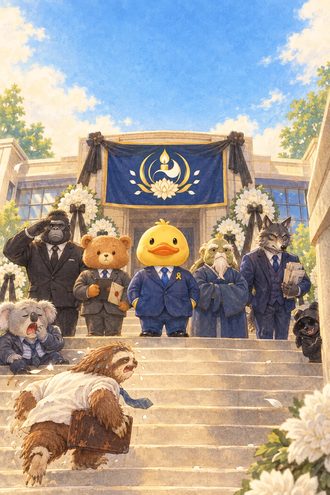
프롤로그
추모공화국 정부청사 국무회의실. 오전 9시 정각.
"국무위원 여러분, 지금 이 순간에도 우리 추모공화국의 근간이 흔들리고 있습니다."
대통령 민주시민의 목소리가 회의실을 가득 채웠다. 그는 연단 위에서 국무위원들을 내려다보며 천천히 말을 이어갔습니다.
"추모는 단순한 의례가 아닙니다. 추모는 우리 공화국의 정체성이며, 국민 통합의 근간이며, 무엇보다 우리 정부의 정당성을 증명하는 핵심 가치입니다."
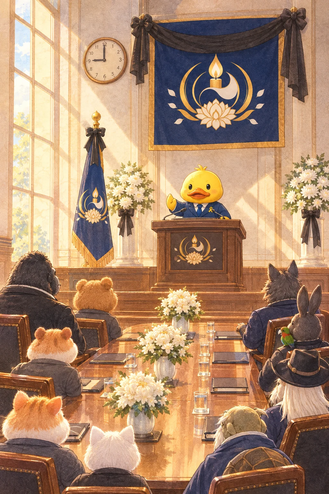
"우리는 추모를 통해 성장했고, 추모를 통해 번영했으며, 추모를 통해 국민들에게 희망을 제공해왔습니다."
회의실 안은 숙연했습니다.
래퍼 겸 문화추모부 장관 들너구리는 검은색 정장 차림으로 고개를 숙인 채 대통령의 말을 경청하고 있었고, 추모원로 부이는 팔짱을 낀 채 창밖을 바라보고 있었습니다.
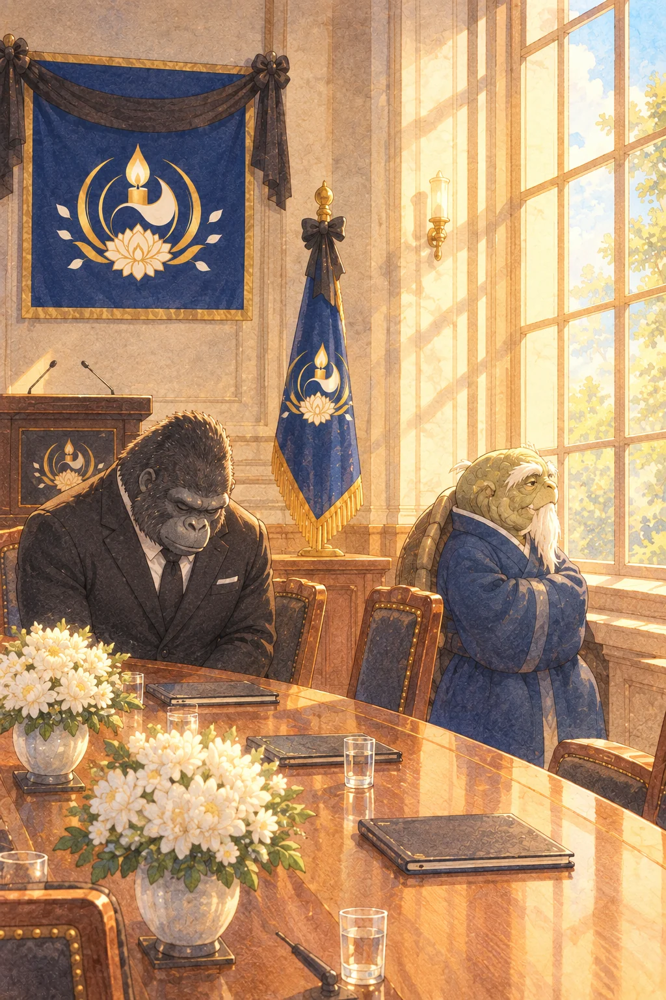
"하지만 최근 우리 공화국이 직면한 도전은 결코 가볍지 않습니다. 국민들의 추모 참여율이 하락하고 있으며, 추모 경험치 획득률 또한 역대 최저치를 기록하고 있습니다."
"이것은 단순한 통계가 아닙니다. 이것은 우리 정부에 대한 국민들의 신뢰도 하락을 의미합니다."
민주시민은 잠시 말을 멈추고 회의실을 둘러보았습니다.
"추모정보원장 추모열사 님, 현 상황에 대한 정확한 보고를 부탁드립니다."
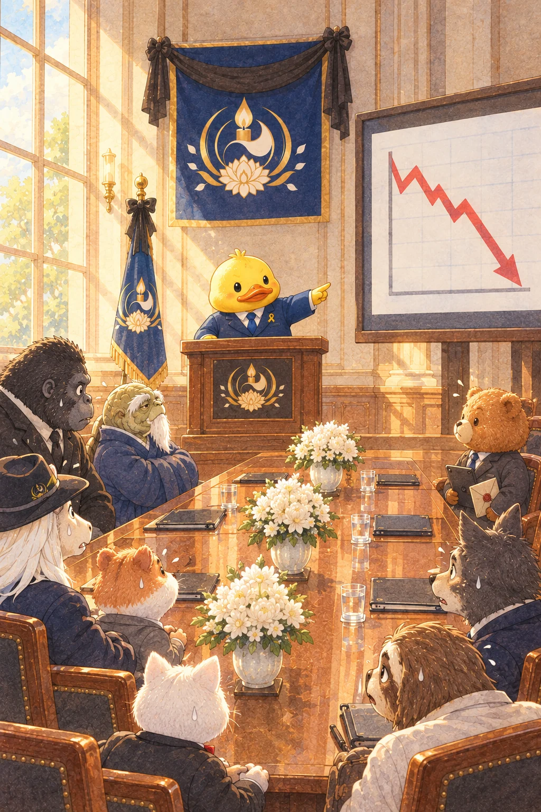
1장: 위기의 보고
추모정보원장 추모열사가 자리에서 일어섰습니다. 국정원 출신답게 그의 자세는 곧았고, 표정은 감정이 제거된 듯 무표정했습니다.
"보고드리겠습니다, 각하."
그는 손에 든 태블릿을 응시하며 기계적인 어조로 말하기 시작했습니다.
"현재 추모공화국이 직면한 위기는 크게 두 가지로 분류됩니다. 첫째, 빅 스타 고갈 사태입니다. 지난달 대도서관 추모 건 이후, 추모 가치가 있는 빅 스타 사망 건수가 급격히 감소했습니다."
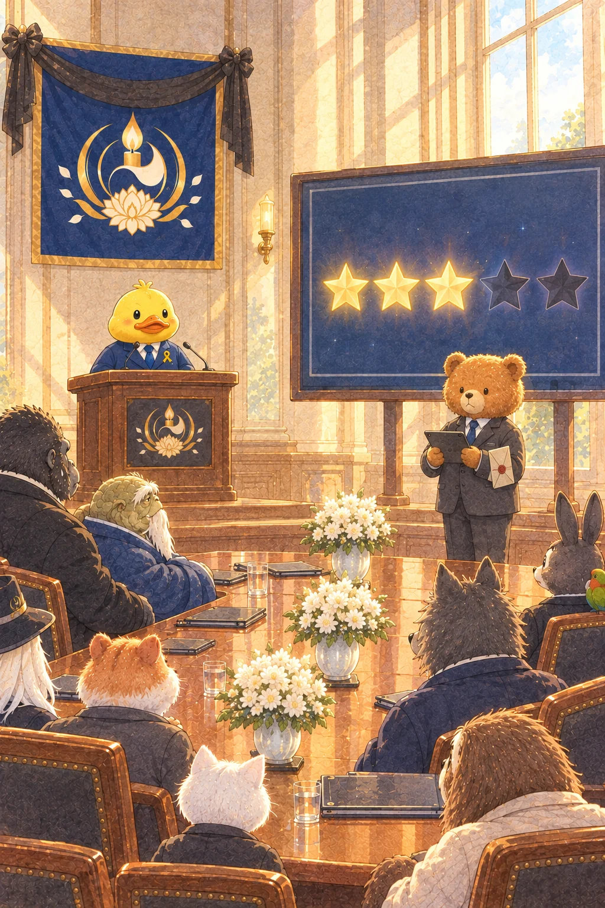
"이로 인해 국민들의 추모 참여 동기가 약화되었으며, 추모 경험치 획득 기회 또한 현저히 줄어들었습니다."
"구체적인 수치를 말씀해주시겠습니까?" 민주시민이 물었습니다.
"예, 각하. 지난 3개월간 추모 가능 빅 스타는 총 2명에 불과했으며, 이는 전년 동기 대비 73% 감소한 수치입니다. 추모 참여율은 38%로 역대 최저치를 기록했고, 대한추모협회로부터의 추모연금 지급액 또한 42% 감소했습니다."
회의실 안에서 작은 술렁임이 일었습니다.
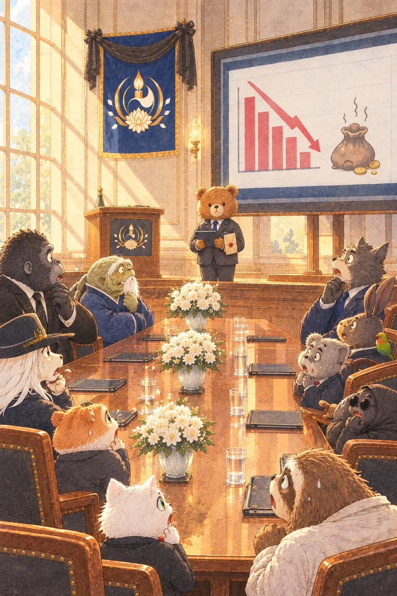
"더 심각한 문제는 둘째 위기입니다." 추모열사의 목소리가 한층 더 낮아졌습니다.
"기밀 정보 유출 건입니다. 우리 행정부 내부의 추모 관리 시스템, 추모 경험치 조작 알고리즘, 그리고 대한추모협회와의 금전 거래 내역이 외부로 유출되었습니다."
"유출 경로를 추적한 결과, 추모법무실장 27사 이기자 님과 추모고위직 하이민주동덕 님의 업무용 단말기에서 접속 기록이 발견되었습니다."
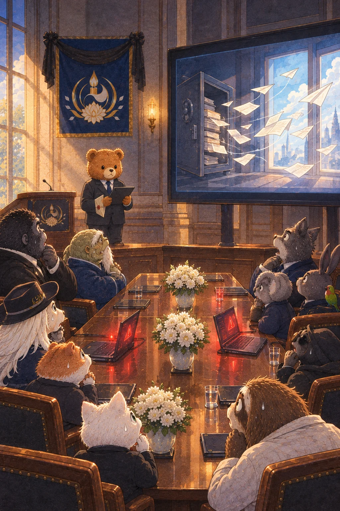
"뭐라고요?"
추모언론통제실장 추모합니도가 벌떡 일어섰습니다.
"이것은 명백한 직무유기이자 국가 기밀 누설입니다! 즉각 조사가 필요합니다!"
"조용히 하십시오." 민주시민이 손을 들어 제지했습니다.
"추모열사 님, 계속하시죠."
"유출된 정보는 현재 어그로꾼 미스터 다이토료 존푹타의 손에 들어간 것으로 확인되었습니다. 그는 해당 정보를 활용하여 우리 추모공화국을 조롱하는 게시물을 각종 커뮤니티에 유포하고 있으며, 이로 인해 국민들의 추모에 대한 신뢰도가 급격히 하락하고 있습니다."
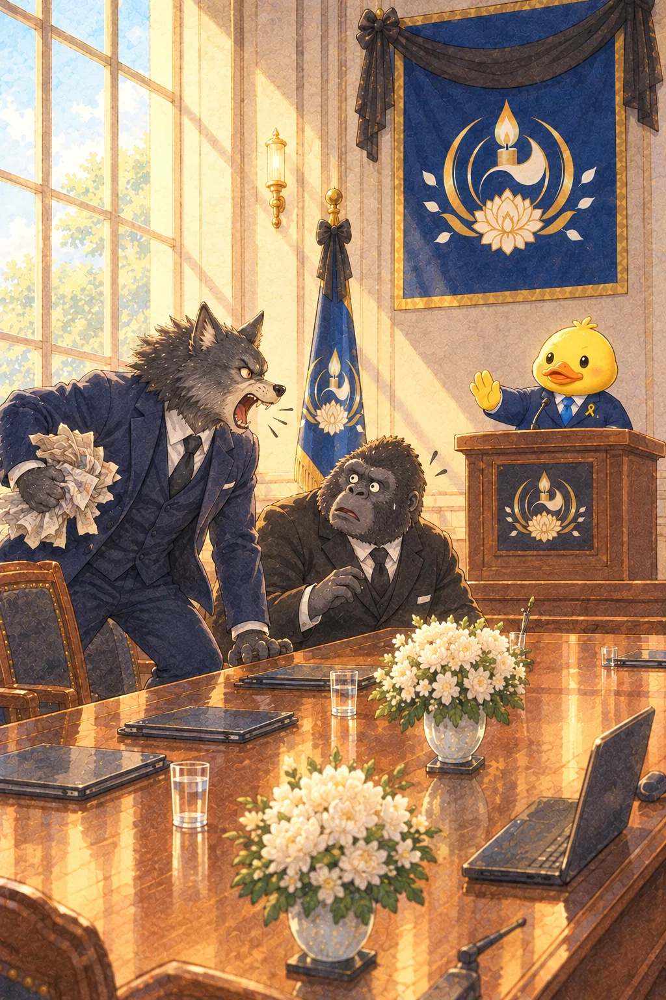
회의실이 다시 술렁거렸습니다. 이번에는 더 크게.
"예를 들어 어떤 내용입니까?"
"차마 말씀드리기 어렵습니다만..." 추모열사는 잠시 주저하다가 태블릿을 읽었습니다.
"'추모공화국 놈들 ㅋㅋㅋ 죽은 사람 팔아먹고 돈 받네 ㅋㅋㅋ 추모 경험치는 또 뭐냐 ㅋㅋㅋ 게임하냐 ㅋㅋㅋ' 등의 내용입니다. 일베 스타일의 조롱 드립이 다수 포함되어 있으며, 우리 행정부의 추모 시스템을 근본부터 부정하는 내용으로 구성되어 있습니다."
민주시민은 깊게 한숨을 쉬었습니다.
"27사 이기자 님과 하이민주동덕 님은 현재 어디 계십니까?"
"27사 이기자 님은... 오늘도 지각하셨습니다." 추모열사가 무표정하게 대답했습니다.
"하이민주동덕 님은 회의실 뒤편에 계십니다."
모두의 시선이 회의실 뒤편으로 향했습니다. 하이민주동덕은 의자에 비스듬히 기댄 채 하품을 하고 있었습니다.
"하이민주동덕 님." 민주시민이 그를 불렀습니다.
"예, 각하..." 하이민주동덕이 귀찮다는 듯 대답했습니다.
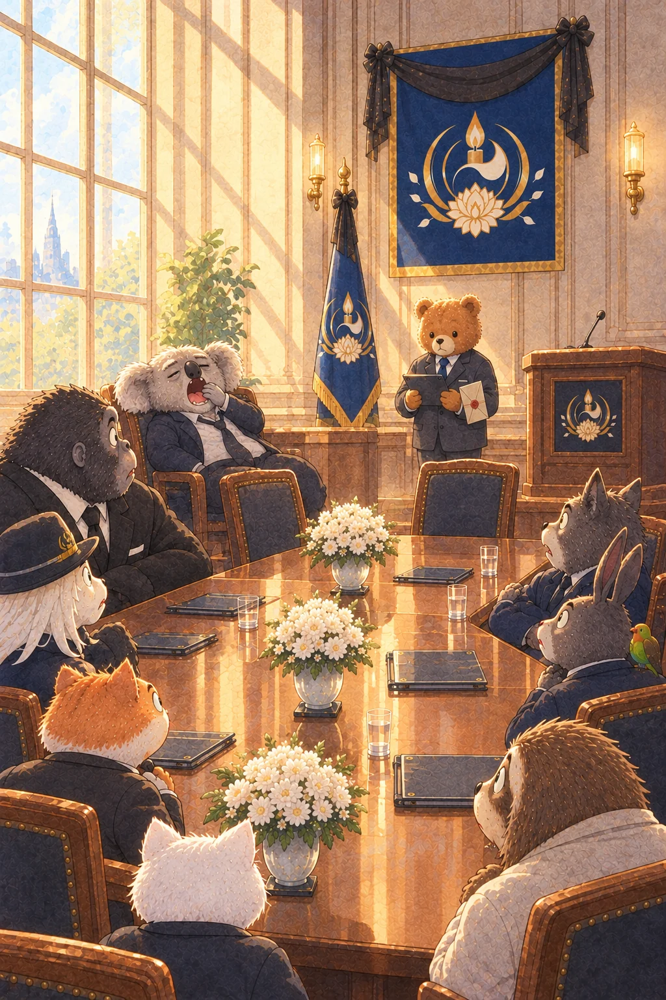
"왜 이렇게 회의가 길어지는 겁니까... 추모도 중요하지만 제 시간도 중요한데요..."
"지금 당신의 업무 태만으로 국가 기밀이 유출되었다는 보고를 받고 계십니다. 할 말씀이 있으신가요?"
"아, 그거요... 저도 잘 모르겠는데요. 제가 언제 그런 걸 유출했다는 겁니까? 저는 그냥 추모 열심히 했을 뿐인데요. 뭐 실수가 있었을 수도 있죠. 사람인데 완벽할 수는 없잖습니까."
회의실 안의 공기가 차갑게 식었습니다.
그때, 회의실 문이 벌컥 열렸습니다.
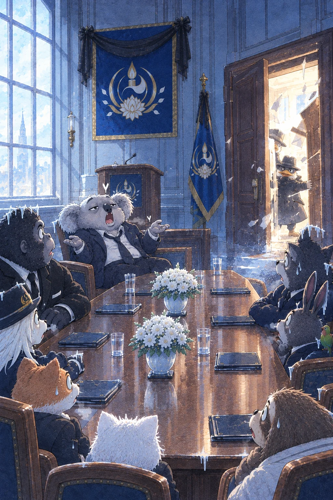
"죄송합니다! 늦었습니다!"
추모법무실장 27사 이기자가 헐레벌떡 뛰어 들어왔습니다. 그의 셔츠는 구겨져 있었고, 넥타이는 삐뚤어져 있었습니다.
"교통 체증이 심해서요! 정말 죄송합니다!"
"27사 이기자 님." 민주시민의 목소리는 얼음장처럼 차가웠습니다.
"오늘이 이번 달 들어 몇 번째 지각입니까?"
"그게... 다섯 번째입니다... 아니, 여섯 번째... 아니..."
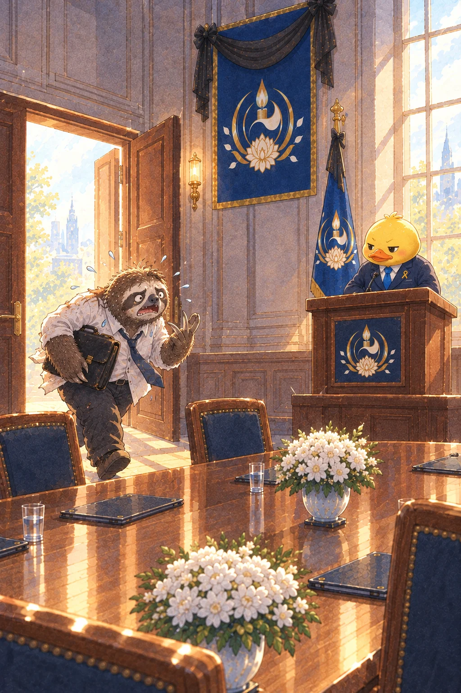
"일곱 번째입니다." 추모열사가 정확하게 끊어 말했습니다.
"그리고 당신의 업무용 단말기에서 국가 기밀 접속 기록이 발견되었습니다. 설명해주시겠습니까?"
27사 이기자의 얼굴이 하얗게 질렸습니다.
"저, 저는... 그런 적 없습니다... 정말입니다..."
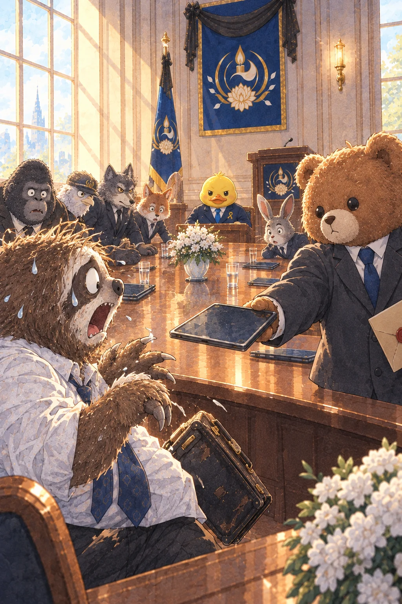
2장: 들너구리의 제안
긴장감이 감도는 회의실에서, 래퍼 겸 문화추모부 장관 들너구리가 천천히 자리에서 일어섰습니다.
그는 검은색 정장 위에 금색 체인을 걸치고 있었고, 손가락에는 여러 개의 반지가 빛나고 있었습니다.
"각하, 그리고 국무위원 여러분."
그의 목소리는 낮고 진중했습니다. 래퍼 특유의 리듬감이 있었지만, 지금은 완전히 진지한 어조였습니다.
"지금 우리가 직면한 위기는 심각합니다. 하지만 저는 이것을 위기가 아닌 기회로 보고 싶습니다."
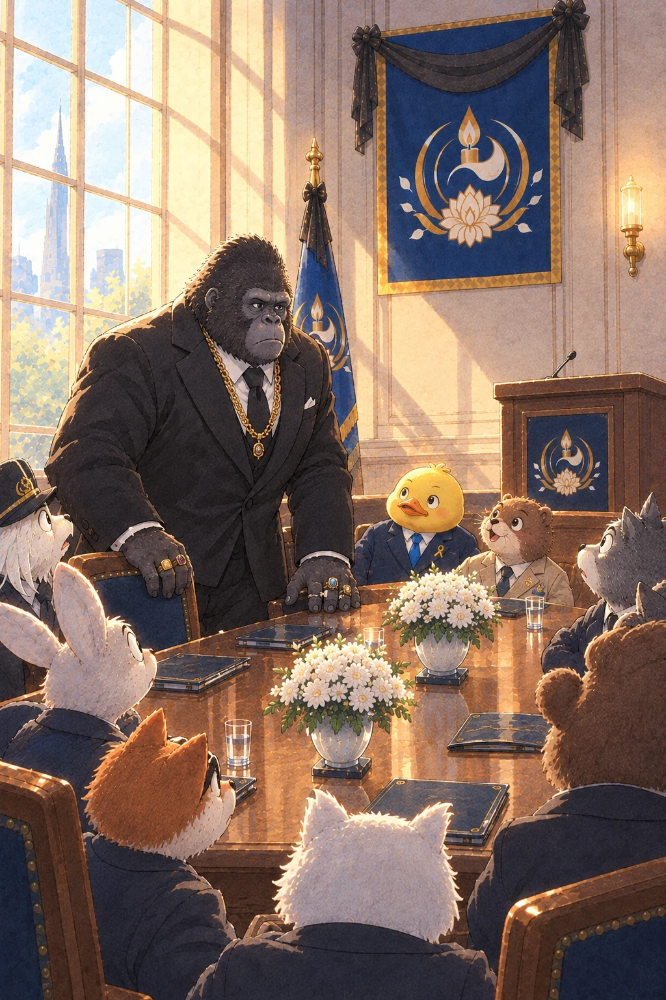
"추모는 의례입니다. 추모는 예술입니다. 그리고 추모는 무엇보다 감동입니다."
그는 회의실을 천천히 걸으며 말을 이어갔습니다.
"빅 스타가 부족하다면, 우리가 빅 스타를 만들면 됩니다. 국민들이 추모에 흥미를 잃었다면, 우리가 새로운 추모의 형식을 제시하면 됩니다."
"구체적으로 어떤 방법을 말씀하시는 겁니까?" 민주시민이 물었습니다.
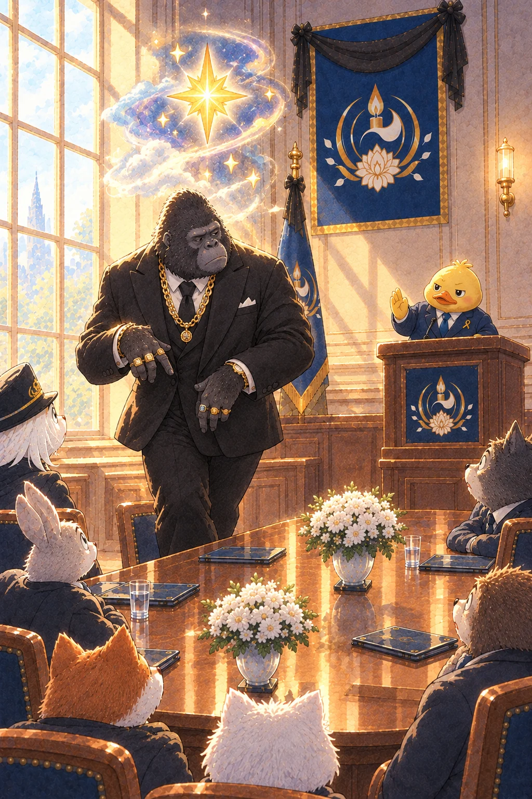
들너구리는 잠시 숨을 고르고, 천천히 입을 열었습니다.
"저를 추모하는 것입니다."
"...네?"
회의실이 조용해졌습니다.
"제 말은, 제가 살아있는 동안 제 자신을 추모하는 퍼포먼스를 진행하자는 것입니다. '추모: 더 라이브'라는 타이틀로, 저는 제 자신의 생전 업적을 기리고, 제 음악을 회고하며, 제가 살아온 삶을 예술적으로 추모하는 대규모 랩 퍼포먼스를 기획하고 있습니다."
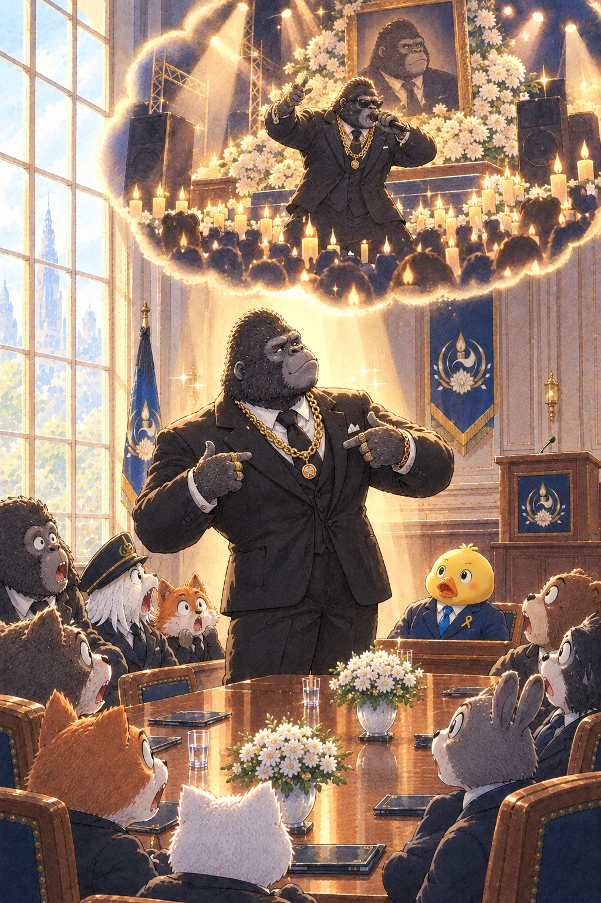
추모고위직 추모투수가 눈을 빛내며 손을 들었습니다.
"장관님, 정말 훌륭한 아이디어입니다! 추모의 패러다임을 완전히 바꾸는 혁신적인 발상이십니다! 살아있는 자를 추모한다는 것, 이것은 추모의 본질에 대한 철학적 질문이기도 합니다!"
"고맙습니다, 추모투수 님." 들너구리가 고개를 끄덕였습니다.
"저는 이미 7곡의 자기추모 랩을 작곡했습니다. 제목은 '내가 죽기 전에 나를 기억하라', '추모하는 자의 추모', '영원한 현재' 등입니다. 각 곡은 3분에서 5분 길이이며, 뮤직비디오 또한 제작 중입니다."
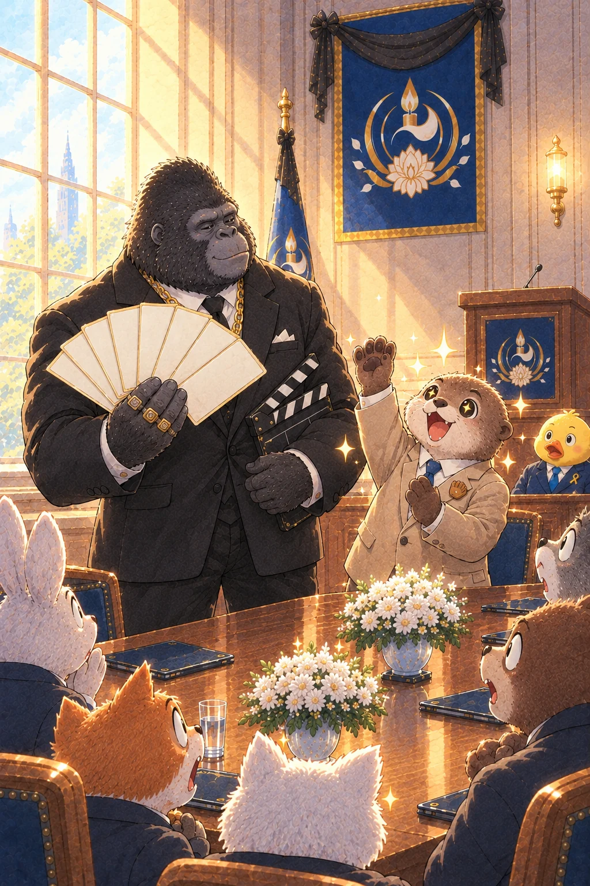
추모원로 부이가 천천히 고개를 들었습니다. 그의 표정은 복잡했습니다.
"들너구리 장관님." 부이의 목소리는 깊고 무거웠습니다.
"제가 이해하기로, 추모란 망자를 기리는 예의이자 전통입니다. 살아있는 자를 추모한다는 것은... 추모의 본질을 왜곡하는 것 아니겠습니까?"
"부이 원로님의 말씀을 존중합니다." 들너구리가 정중하게 답했습니다.
"하지만 저는 추모가 단순히 죽음 이후의 의례에 국한되어야 한다고 생각하지 않습니다. 추모는 기억입니다. 추모는 감사입니다. 추모는 존경입니다. 그렇다면 우리는 왜 사람이 죽은 후에야 그를 기억하고, 감사하고, 존경합니까? 살아있을 때 그렇게 하면 안 됩니까?"
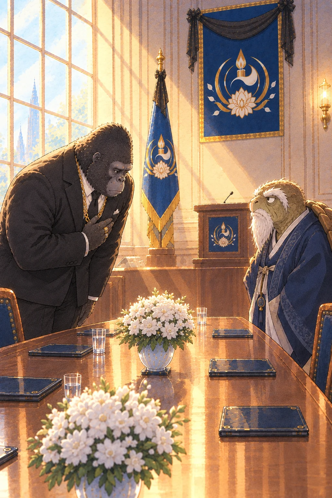
"그것은 궤변입니다." 부이가 단호하게 말했습니다.
"당신은 추모를 정치적 도구로, 흥행 수단으로 전락시키고 있습니다. 전통적인 추모의 엄숙함과 진정성은 어디로 갔습니까?"
"원로님." 민주시민이 끼어들었습니다.
"원로님의 우려를 이해합니다. 하지만 지금은 비상 상황입니다. 전통도 중요하지만, 우리 공화국의 생존이 더 중요합니다. 들너구리 장관님의 제안을 진지하게 검토해볼 필요가 있다고 생각합니다."
부이는 더 이상 말하지 않고 다시 창밖을 바라보았습니다.
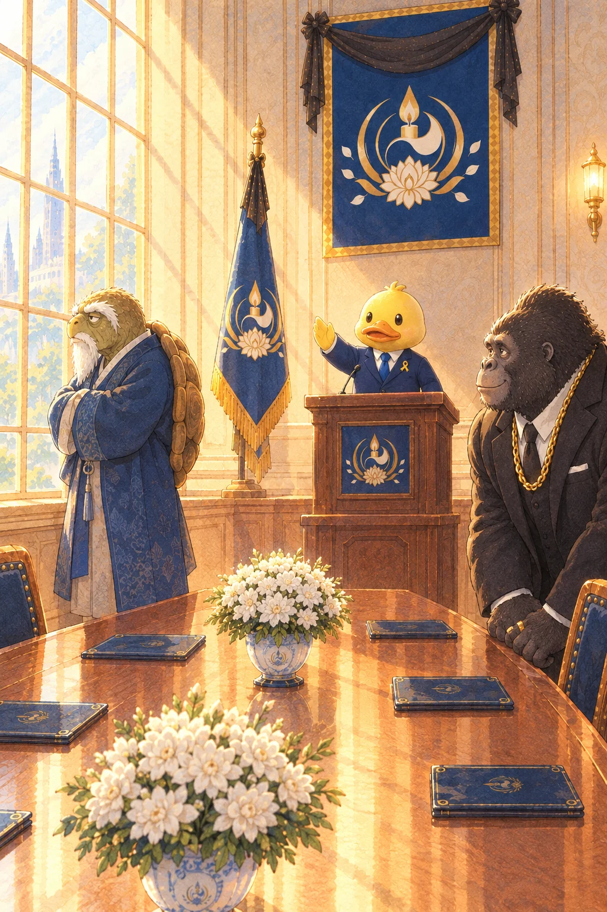
3장: 추모대장의 단합대회
"각하!"
회의실 한쪽에서 우렁찬 목소리가 터져 나왔습니다. 추모원로 추모대장이 벌떡 일어섰습니다. 그의 얼굴은 환한 미소로 가득했고, 두 팔을 크게 벌리고 있었습니다.
"각하, 그리고 국무위원 여러분! 지금 이 회의실의 분위기가 너무 무겁지 않습니까! 우리는 추모를 하는 사람들입니다! 추모는 슬픔만이 아닙니다! 추모는 고인의 삶을 기쁘게 기억하는 것이기도 합니다!"
"추모대장 님, 지금은 회의 중입니다." 추모합니도가 인상을 찌푸리며 말했습니다.
"바로 그겁니다! 회의가 너무 딱딱합니다!"
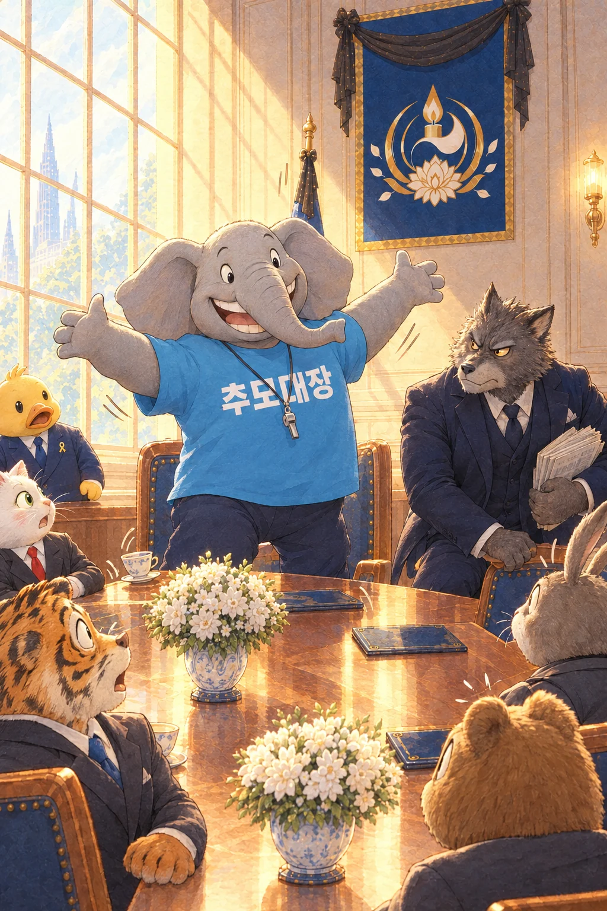
추모대장이 회의실 중앙으로 걸어 나왔습니다.
"우리가 언제부터 이렇게 경직된 조직이 되었습니까? 우리는 추모를 통해 국민들에게 감동을 주는 사람들입니다! 그런 우리가 이렇게 시무룩한 얼굴로 앉아있으면 되겠습니까?"
그는 갑자기 27사 이기자를 가리켰습니다.
"27사 이기자 님! 웃어보십시오!"
"예...?" 27사 이기자가 당황하며 어색한 미소를 지었습니다.
"그게 웃는 겁니까? 제대로 웃으십시오! 활짝!"
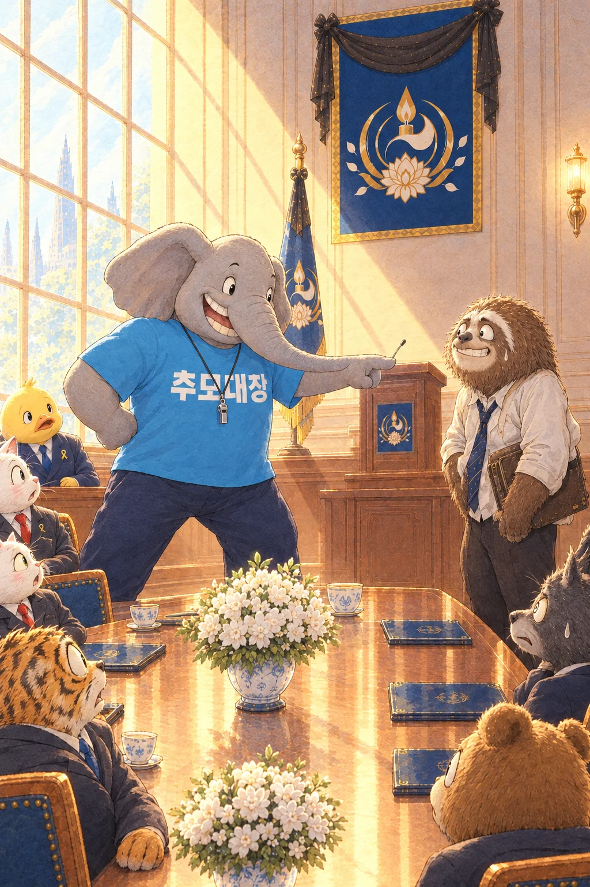
추모대장의 목소리가 커졌습니다. 그의 얼굴에는 여전히 환한 미소가 있었지만, 그 눈빛은 날카로웠습니다.
"추모는 즐거운 겁니다! 고인을 재미있게 기억하는 겁니다! 왜 웃지 않으십니까?"
"죄, 죄송합니다..." 27사 이기자가 억지로 더 크게 웃었습니다.
"하이민주동덕 님도 웃어보십시오!"
"저는 별로 웃고 싶지 않은데요..." 하이민주동덕이 투덜거렸습니다.
"웃고 싶지 않다고요?"
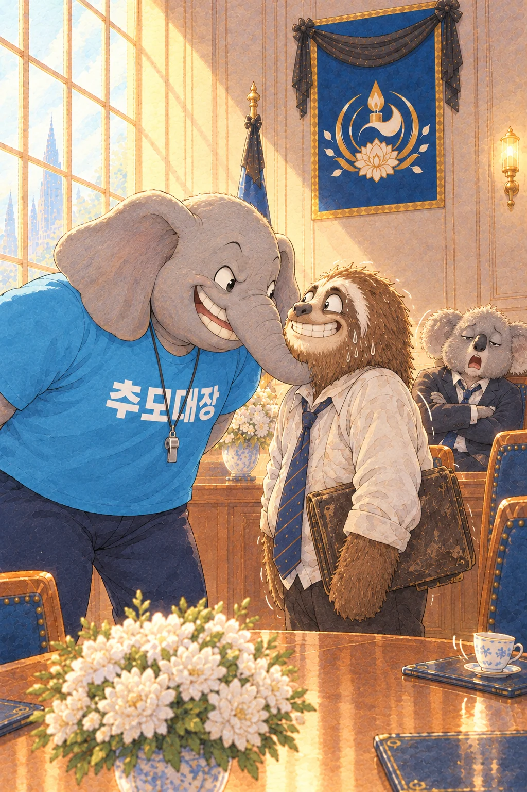
추모대장이 하이민주동덕에게 다가갔습니다. 그는 여전히 웃고 있었지만, 그 미소는 점점 더 기괴해졌습니다.
"추모는 의무입니다. 즐겁게 추모하는 것도 의무입니다. 당신이 웃고 싶든 싶지 않든, 우리는 지금 국가를 위해 일하고 있습니다. 그리고 국가를 위해 일하는 사람은 밝은 얼굴로 일해야 합니다. 안 그렇습니까?"
"그, 그렇습니다..." 하이민주동덕이 마지못해 웃었습니다.
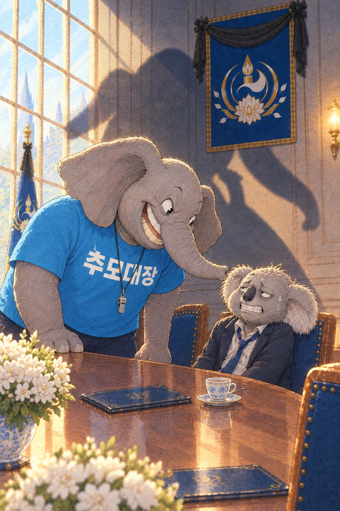
"좋습니다! 이제 모두 일어나십시오!" 추모대장이 손뼉을 쳤습니다.
"우리 지금 여기서 즉석 추모 단합대회를 하겠습니다! 우리가 먼저 즐겁게 추모하는 모습을 보여야 국민들도 따라올 것 아니겠습니까?"
"추모대장 님, 지금은 그럴 때가..." 추모합니도가 말하려 했지만, 추모대장이 그를 가로막았습니다.
"합니도 님, 당신도 일어나십시오. 각하께서도 동의하시죠?"
추모대장이 민주시민을 바라보았습니다. 민주시민은 잠시 고민하다가 고개를 끄덕였습니다.
"좋습니다. 분위기 전환도 필요할 것 같군요."
"감사합니다, 각하!" 추모대장이 환호했습니다.
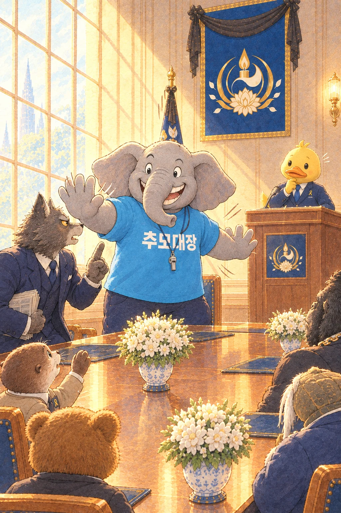
"자, 이제 모두 일어나서 손을 들고 '추모, 추모, 추모!'를 외치겠습니다! 큰 소리로! 즐겁게!"
국무위원들이 하나둘 일어났습니다. 들너구리는 재미있다는 표정으로 손을 들었고, 추모투수는 열정적으로 따라 했습니다. 하지만 부이는 자리에서 일어나지 않았고, 추모열사는 무표정하게 서 있을 뿐이었습니다.
"추모! 추모! 추모!"
추모대장이 구령을 외쳤고, 일부 국무위원들이 따라 외쳤습니다. 하지만 그 목소리들은 어색하고 공허했습니다.
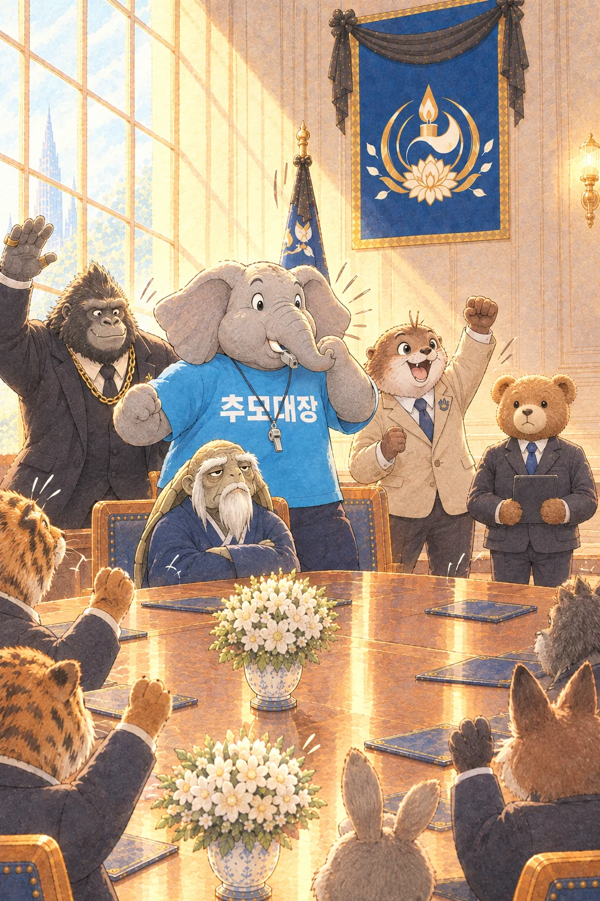
"소리가 너무 작습니다! 더 크게! 더 즐겁게!"
추모대장이 소리쳤습니다. 그의 얼굴은 여전히 웃고 있었지만, 이제 그것은 완전히 광기어린 미소였습니다.
"왜 웃지 않으십니까? 추모는 즐거운 겁니다! 고인이 당신들의 이런 시무룩한 얼굴을 보면 얼마나 슬프겠습니까?"
회의실은 기묘한 광경으로 가득 찼습니다. 국무위원들은 억지로 웃으며 '추모'를 외쳤고, 추모대장은 미친 듯이 춤을 추며 그들을 독려했습니다.
부이는 그 광경을 지켜보며 깊게 한숨을 쉬었습니다.
'이것이... 추모란 말인가...'
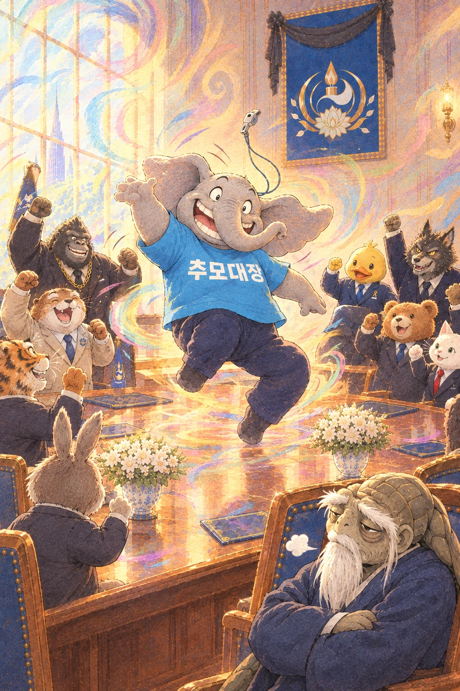
4장: 숙청의 시작
추모대장의 강제적인 단합대회가 끝나고 회의실에 다시 차가운 정적이 흘렀습니다. 국무위원들은 지쳐서 자리에 앉았고, 추모대장만이 여전히 만족스러운 미소를 짓고 있었습니다.
"좋습니다." 민주시민이 차분하게 말했습니다.
"이제 본론으로 돌아가겠습니다. 추모열사 님, 애국좌수 님, 앞으로 나와주시겠습니까."
추모열사와 추모교도관 애국좌수가 연단 앞으로 걸어 나왔습니다. 애국좌수의 눈빛은 이제 광기로 번쩍이고 있었습니다.
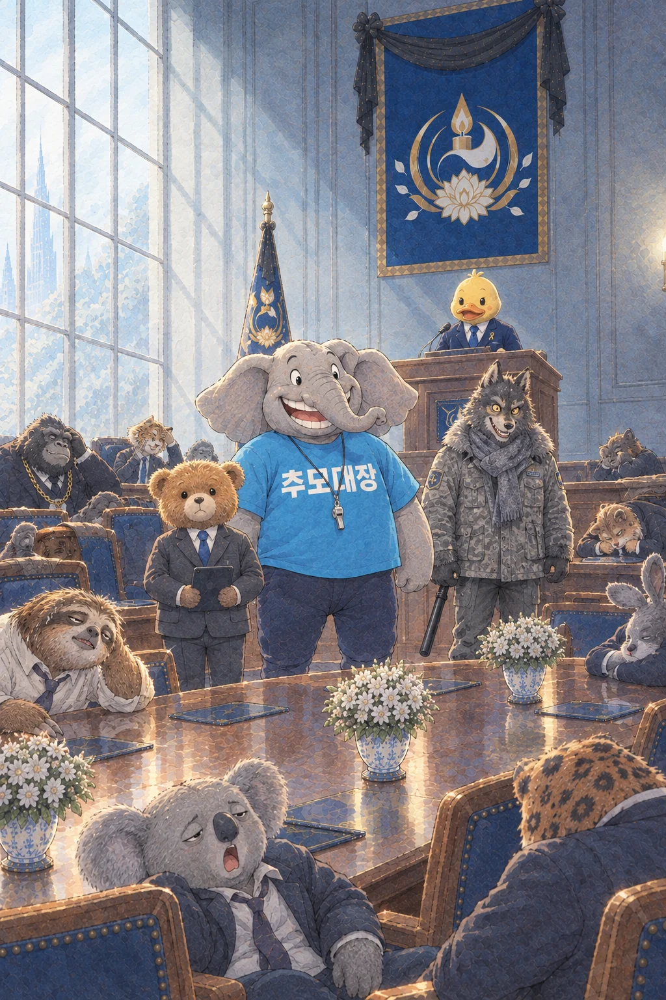
"27사 이기자 님." 민주시민이 차갑게 말했습니다.
"당신은 추모법무실장으로서의 직무를 유기했으며, 국가 기밀을 누설했습니다. 더 나아가, 당신은 지각을 반복하며 추모에 대한 성의를 보이지 않았습니다. 이것은 명백한 반추모죄에 해당합니다."
"각하, 저는 정말..."
"변명하지 마십시오." 민주시민이 손을 들어 그를 제지했습니다.
"애국좌수 님, 처리해주시겠습니까?"
"영광입니다, 각하."
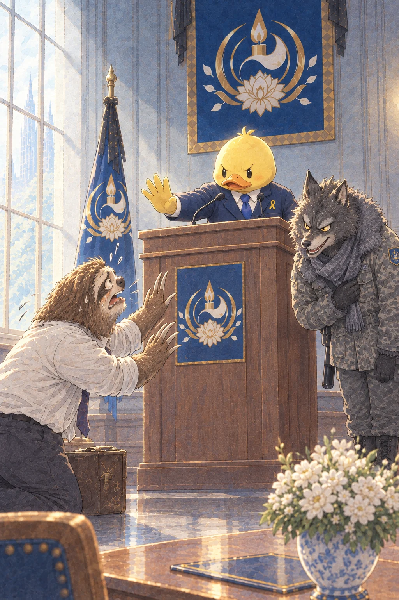
애국좌수가 27사 이기자에게 다가갔습니다. 그는 공손하게 허리를 숙이며 말했습니다.
"27사 이기자 님, 정말 죄송합니다만, 각하의 명령이십니다. 저도 이런 일을 하고 싶지 않으시지만, 추모공화국의 안녕을 위해서는 어쩔 수 없습니다. 이해해주시겠습니까?"
"뭐, 뭐 하시려고..."
"조용히 하십시오."
애국좌수의 목소리가 갑자기 차갑게 변했습니다. 하지만 여전히 존댓말이었습니다.
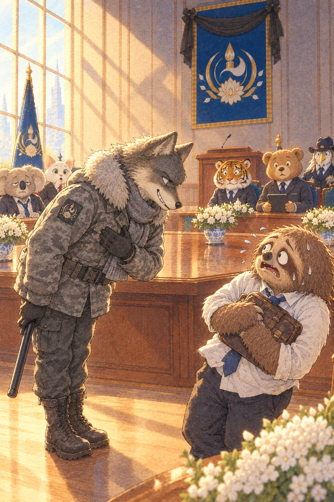
"당신은 추모를 모독했습니다. 당신은 고인들을 모독했습니다. 당신은 우리 공화국을 모독했습니다. 이것이 얼마나 큰 죄인지 아십니까?"
애국좌수가 27사 이기자의 팔을 비틀었습니다. 27사 이기자가 비명을 질렀습니다.
"아아악!"
"소리 지르지 마십시오. 듣기 싫습니다."
애국좌수가 공손하게 말하며 더 세게 팔을 비틀었습니다.
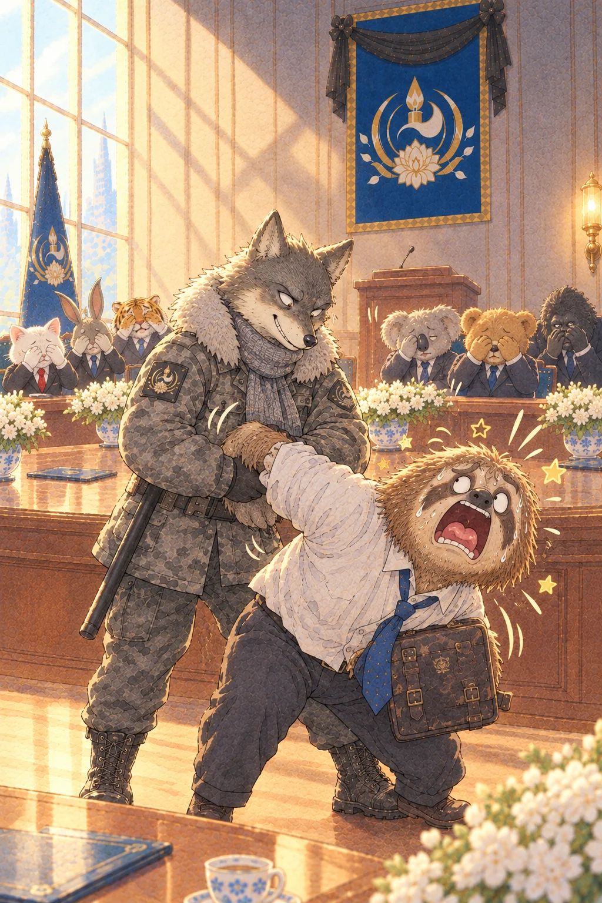
"당신 같은 사람 때문에 우리 추모공화국이 위기에 처했습니다. 정말 죄송합니다만, 당신은 교정되어야 합니다. 추모 교정국에서 제대로 교육을 받으셔야 합니다. 알겠습니까?"
"제발... 제발..." 27사 이기자가 울먹였습니다.
"제발은 고인들에게 하십시오."
애국좌수가 그를 질질 끌고 회의실 밖으로 나갔습니다. 문이 닫히고, 복도에서 27사 이기자의 비명이 희미하게 들려왔습니다.
회의실은 침묵에 잠겼습니다.
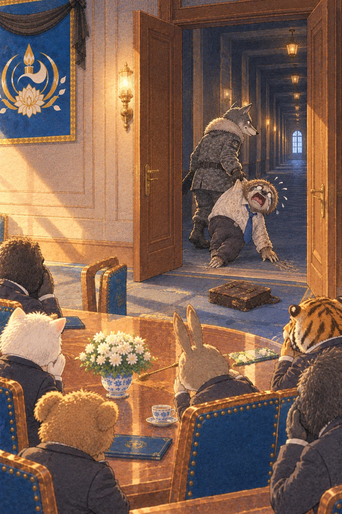
"하이민주동덕 님."
이번에는 추모열사가 입을 열었습니다.
"당신 차례입니다."
"저, 저요?" 하이민주동덕이 당황하며 물었습니다.
"예. 당신도 기밀 유출의 책임이 있으며, 무엇보다 추모에 대한 성의가 없습니다. 방금 전 단합대회에서도 당신의 태도는 매우 불성실했습니다."
"저는... 저는 그냥 피곤했을 뿐입니다..."
"피곤하다는 것이 변명이 됩니까?" 추모열사의 목소리는 여전히 무표정했습니다.
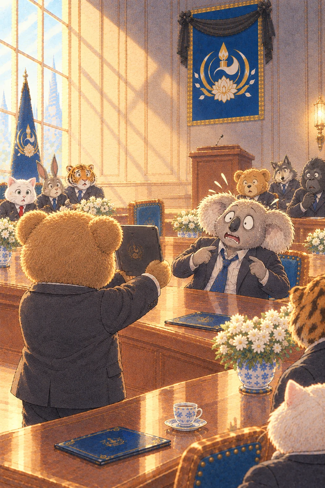
"당신은 추모고위직입니다. 고위직이라는 것은 더 많은 책임을 진다는 뜻입니다. 하지만 당신은 그 책임을 다하지 않았습니다."
"저는..."
"각하의 명령으로, 당신의 추모 경험치를 전액 박탈합니다. 그리고 당신을 추모공화국 공식 채팅방에서 영구 추방합니다."
"뭐라고요? 그럴 수는 없습니다! 저는 이 나라를 위해..."
"채팅방에서 나가주십시오."
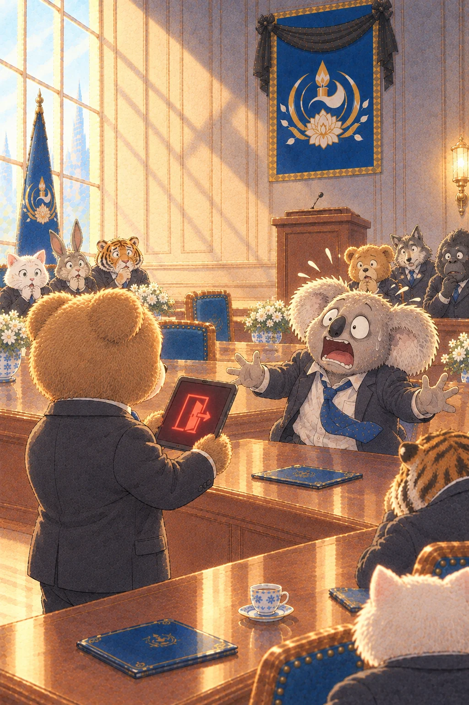
추모열사가 태블릿을 조작했습니다. 하이민주동덕의 휴대폰에서 알림음이 울렸습니다.
[추모공화국 공식 채팅방에서 강제 퇴장되었습니다]
"이, 이럴 수가..."
하이민주동덕이 휴대폰을 바라보며 멍하니 서 있었습니다.
"나가주십시오."
추모열사가 회의실 문을 가리켰습니다.
하이민주동덕은 비틀거리며 회의실 밖으로 걸어 나갔습니다. 그의 뒷모습은 초라했습니다.
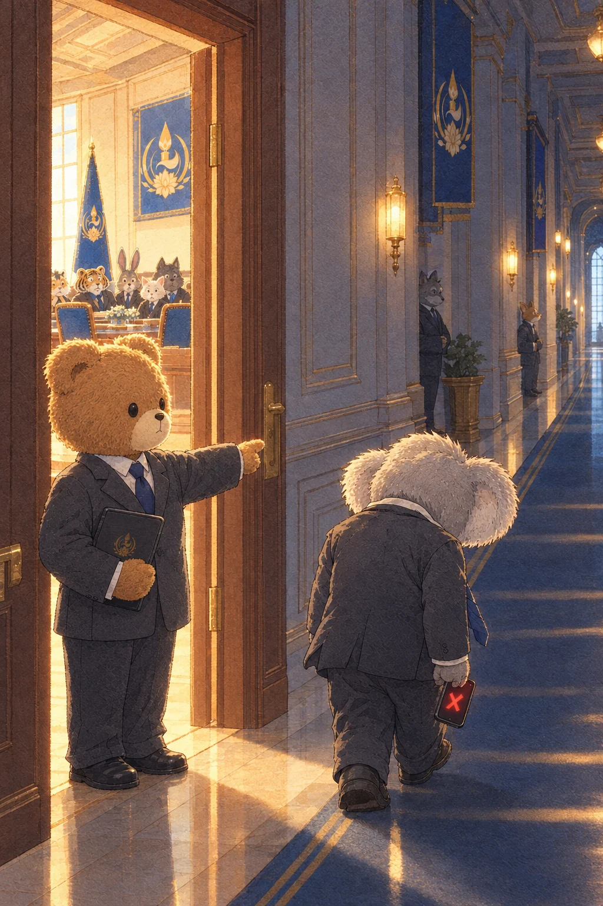
5장: 추모 교정 리얼리티 쇼
3일 후.
추모공화국 국영방송 제1채널에서는 새로운 프로그램이 방송되고 있었습니다.
[추모 교정 리얼리티 쇼: 너를 바로잡아주마]
스튜디오에는 화려한 조명이 설치되어 있었고, 중앙에는 의자에 묶인 두 사람이 있었습니다. 27사 이기자와 미스터 다이토료 존푹타였습니다.
"시청자 여러분, 안녕하십니까."
MC로 나온 추모대장이 환한 미소로 카메라를 바라보았습니다.
"오늘은 특별한 손님들을 모셨습니다. 우리 추모공화국을 배신한 두 사람입니다! 과연 이들은 어떻게 교정될까요? 지금부터 지켜보시죠!"
스튜디오 객석에서 박수 소리가 터져 나왔습니다.
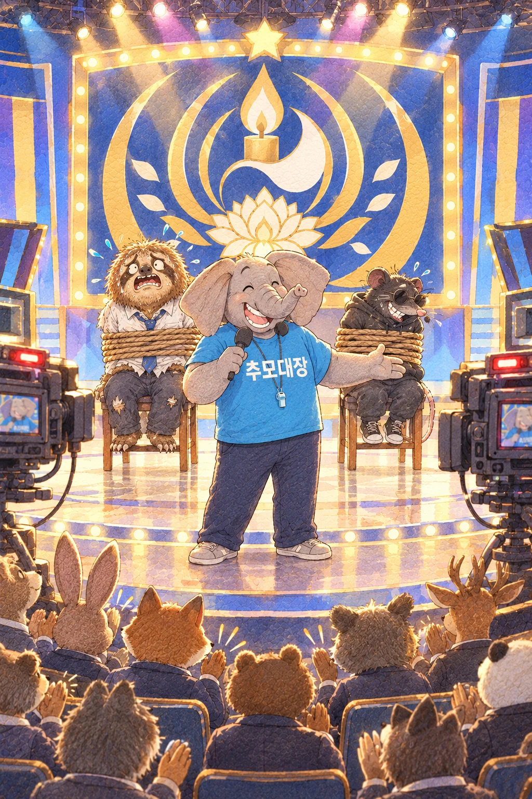
애국좌수가 무대에 등장했습니다. 그는 깔끔한 정장 차림이었고, 손에는 가죽 장갑을 끼고 있었습니다.
"여러분, 정말 반갑습니다." 애국좌수가 공손하게 인사했습니다.
"오늘 제가 교정할 두 분을 소개하겠습니다. 먼저, 추모법무실장이었던 27사 이기자 님입니다. 이분은 지각을 반복하고, 국가 기밀을 유출하고, 추모에 성의를 보이지 않았습니다. 정말 안타까운 일입니다."
27사 이기자는 의자에 묶인 채 고개를 떨구고 있었습니다. 그의 얼굴은 멍투성이였고, 옷은 찢어져 있었습니다.
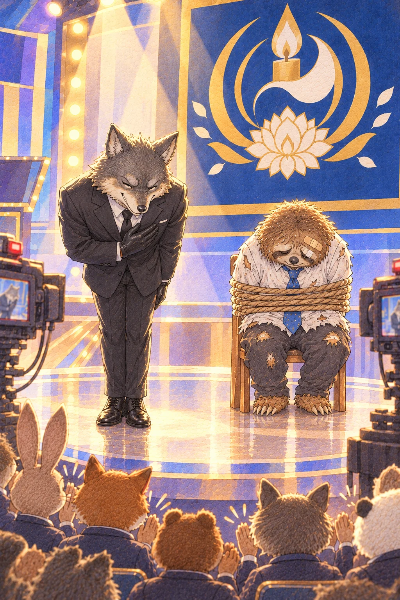
"그리고 이쪽은 미스터 다이토료 존푹타 님입니다. 이분은 우리 공화국을 조롱하고, 일베 드립을 치며, 국민들의 추모 의지를 꺾으려 했습니다. 정말 용서할 수 없는 행위죠."
미스터 다이토료 존푹타는 오히려 웃고 있었습니다.
"ㅋㅋㅋ 이게 뭐야 ㅋㅋㅋ 리얼리티 쇼라고? ㅋㅋㅋ 추모 교정? ㅋㅋㅋ 개웃기네 진짜 ㅋㅋㅋ"
"존푹타 님, 웃으시는군요." 애국좌수가 그에게 다가갔습니다.
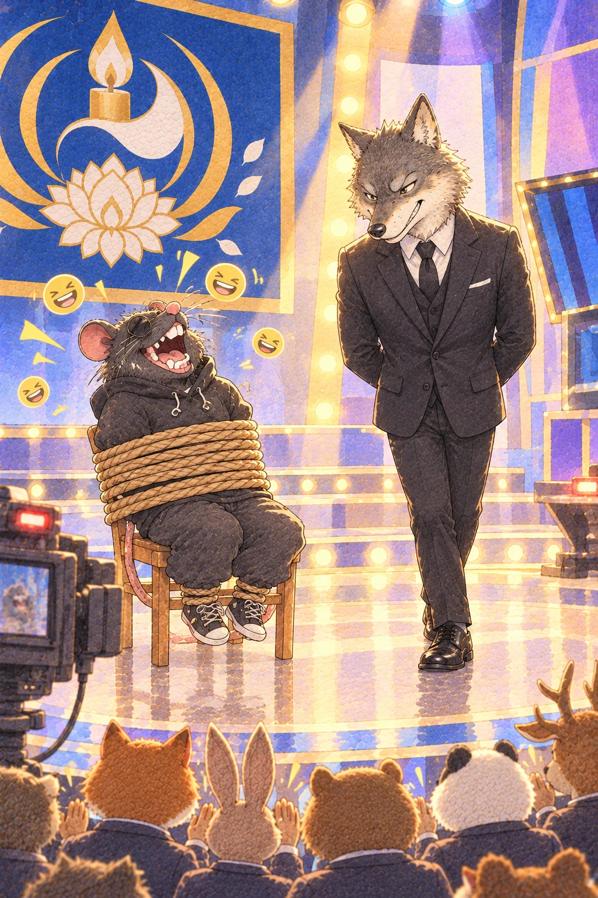
"좋습니다. 유머 감각이 있으신 분이시군요. 저도 유머를 좋아합니다. 그런데 말입니다, 님께서는 왜 고인들을 조롱하셨습니까? 그분들이 님께 무슨 잘못을 했습니까?"
"ㅋㅋㅋ 고인 조롱? ㅋㅋㅋ 나는 추모공화국 너희들을 조롱한 거지 ㅋㅋㅋ 죽은 사람 팔아먹는 너희들을 ㅋㅋㅋ"
"아, 그렇군요." 애국좌수가 고개를 끄덕였습니다.
"그럼 정정하겠습니다. 님께서는 우리를 조롱하셨군요. 우리가 님께 무슨 잘못을 했습니까? 우리는 그저 추모를 통해 국민들을 행복하게 만들려고 노력했을 뿐입니다. 정말 죄송합니다만, 그게 그렇게 웃긴 일입니까?"
애국좌수가 존푹타의 뺨을 가볍게 때렸습니다.
"아얏!"
"아, 죄송합니다. 손이 미끄러졌습니다." 애국좌수가 공손하게 사과했습니다.
"계속하시죠. 님께서는 왜 우리를 조롱하셨습니까?"
"너희가... 너희가 가짜잖아... 추모 경험치? 추모 연금? 다 사기잖아..."
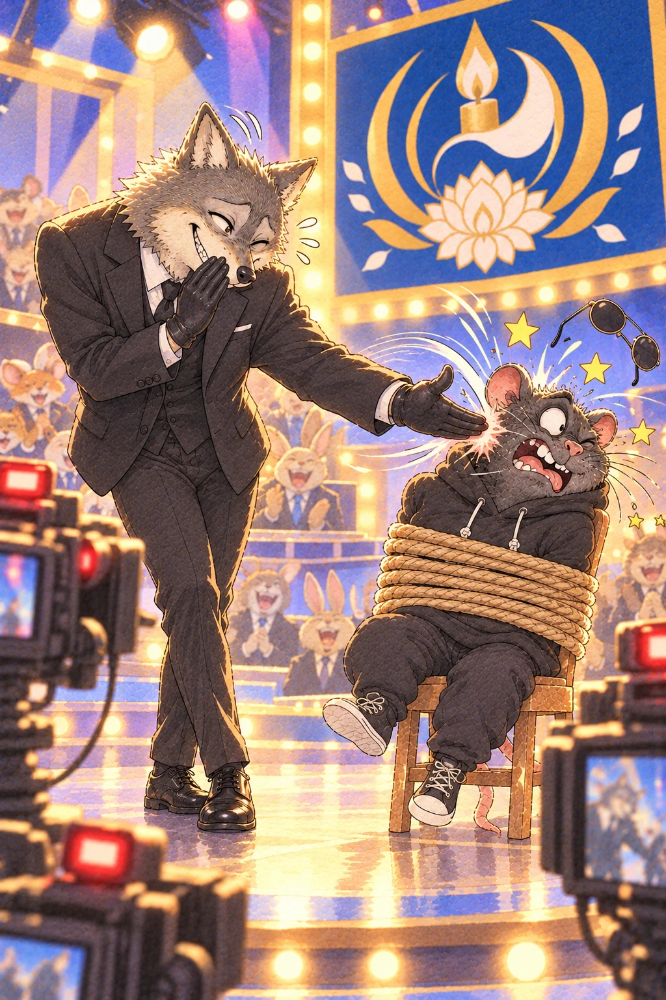
"사기라고요?" 애국좌수의 목소리가 차갑게 변했습니다.
"님, 정말 죄송합니다만, 그건 님의 오해입니다. 우리는 진심으로 추모하고 있습니다. 추모 경험치는 국민들의 추모 열정을 수치화한 것일 뿐이고, 추모 연금은 그 열정에 대한 보상일 뿐입니다. 어디가 사기입니까?"
애국좌수가 다시 존푹타를 때렸습니다. 이번에는 더 세게.
객석에서 박수 소리가 터져 나왔습니다.
"좋습니다! 때려주십시오!"
"저런 놈은 교정되어야 합니다!"
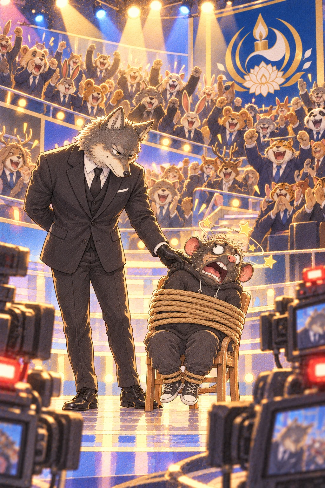
추모대장이 카메라를 향해 활짝 웃었습니다.
"시청자 여러분, 보고 계십니까? 이것이 바로 추모 교정입니다! 추모를 모독한 자들은 반드시 대가를 치러야 합니다!"
애국좌수는 이제 27사 이기자에게로 향했습니다.
"27사 이기자 님." 그가 부드럽게 말했습니다.
"님께서는 어떻게 생각하십니까? 님도 우리가 사기꾼이라고 생각하십니까?"
"아, 아닙니다... 저는... 저는 그저 실수를..."
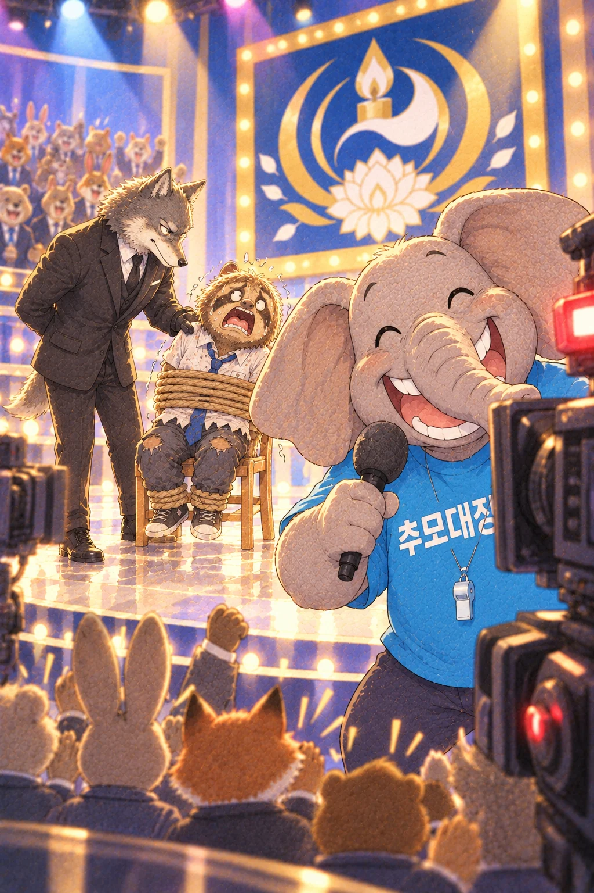
"실수요?" 애국좌수가 웃었습니다.
"일곱 번이나 지각한 것이 실수입니까? 기밀을 유출한 것이 실수입니까? 정말 죄송합니다만, 님께서는 변명만 하고 계십니다."
"저는... 저는 정말..."
"조용히 하십시오."
애국좌수가 27사 이기자의 머리를 눌렀습니다.
"님께서는 지금부터 100번 절을 하시면서 '저는 추모를 모독했습니다. 용서해주십시오'라고 외치셔야 합니다. 할 수 있겠습니까?"
"예... 예..." 27사 이기자가 떨리는 목소리로 대답했습니다.
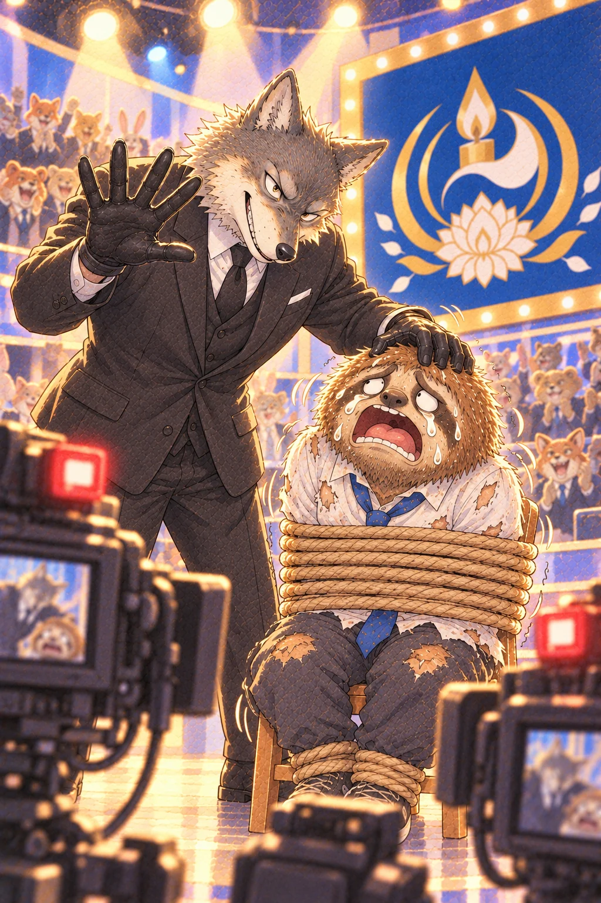
애국좌수가 그의 묶인 밧줄을 풀어주었습니다. 27사 이기자는 비틀거리며 일어나 절을 시작했습니다.
"저는... 추모를... 모독했습니다... 용서해주십시오..."
"소리가 작습니다! 더 크게!" 추모대장이 소리쳤습니다.
"저는 추모를 모독했습니다! 용서해주십시오!"
27사 이기자가 울먹이며 절을 했습니다. 한 번, 두 번, 세 번...
객석에서는 환호성이 터져 나왔습니다. 카메라는 그 모든 장면을 생생하게 담아냈습니다.
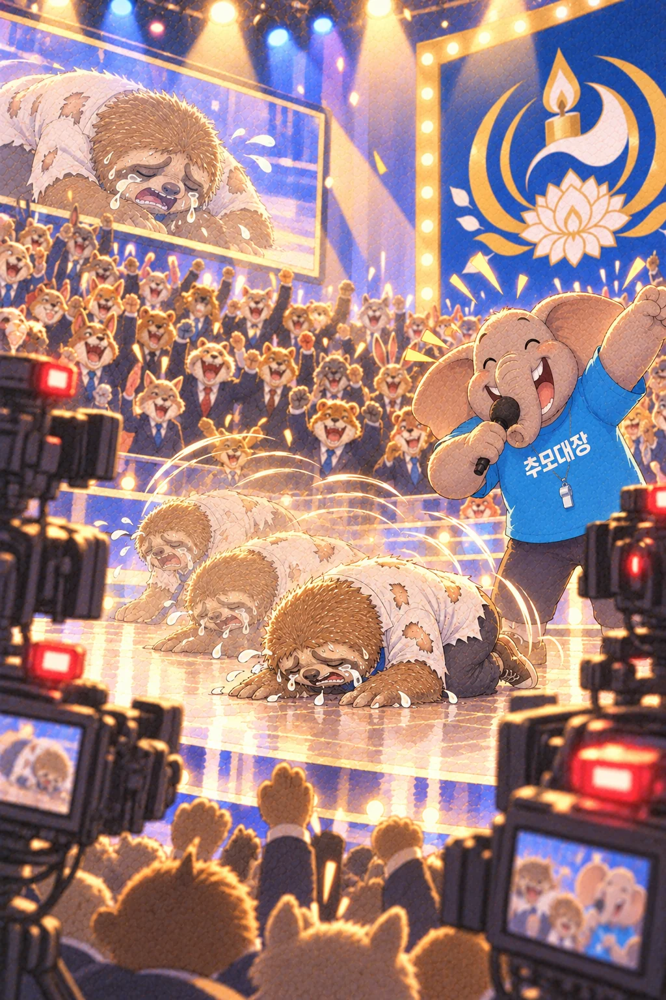
에필로그: 공포와 흥행
추모공화국 대통령 집무실.
민주시민은 대형 스크린으로 '추모 교정 리얼리티 쇼'의 시청률 그래프를 바라보고 있었습니다. 그래프는 숨 막힐 정도로 가파르게 상승하고 있었습니다.
"각하, 대성공입니다." 들너구리가 보고했습니다.
"실시간 시청률 42.7%를 기록했습니다. 역대 최고 시청률입니다. 그리고 추모 참여율도 급상승하고 있습니다. 국민들이 다시 추모에 열광하기 시작했습니다."
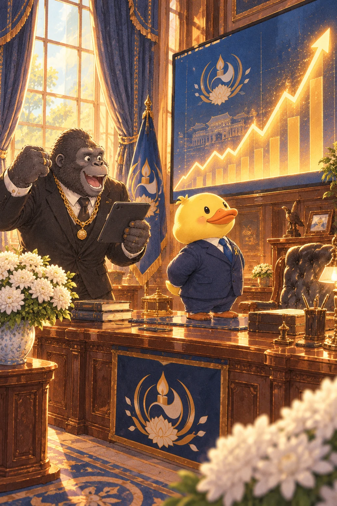
"공포가 효과를 발휘했군요." 추모열사가 무표정하게 말했습니다.
"국민들은 27사 이기자와 존푹타의 모습을 보며 자신들도 저렇게 될 수 있다는 두려움을 느꼈을 것입니다. 동시에 그들이 처벌받는 모습에서 카타르시스를 느꼈을 것입니다."
"대한추모협회에서도 연락이 왔습니다." 추모합니도가 보고했습니다.
"추모 교정 프로그램을 정규 편성하라는 권고를 받았습니다. 협회 측에서는 이 프로그램이 국민 교육에 큰 도움이 된다고 평가했습니다."
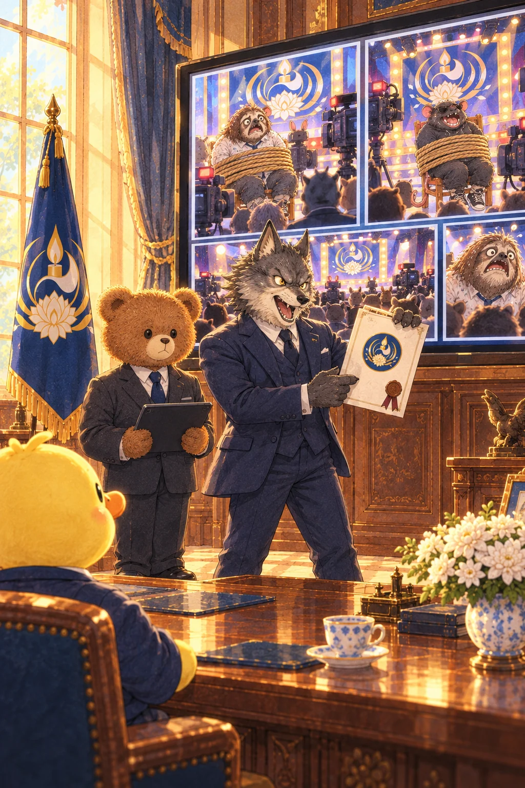
민주시민은 고개를 끄덕였습니다.
"좋습니다. 계속 진행하십시오. 그리고 들너구리 장관님의 '추모: 더 라이브' 프로젝트도 본격적으로 준비하십시오. 우리는 이 위기를 기회로 만들었습니다."
"감사합니다, 각하." 들너구리가 허리를 숙였습니다.
회의실 한쪽 구석에서, 부이 원로는 창밖을 바라보고 있었습니다. 그의 눈에는 깊은 슬픔이 담겨 있었습니다.
'추모가 이렇게 변질되다니...'
하지만 그는 아무 말도 하지 않았습니다. 할 수 없었습니다.
이것이 추모공화국의 현실이었습니다.
그날 밤, 추모공화국 전역에서는 사람들이 열심히 추모를 하고 있었습니다.
두려움 때문에.
살아남기 위해.
추모 경험치를 얻기 위해.
그리고 그 모든 것이 '추모: 더 라이브'라는 이름으로 포장되었습니다.
추모공화국의 밤은 깊어가고 있었습니다.
[1부 끝]
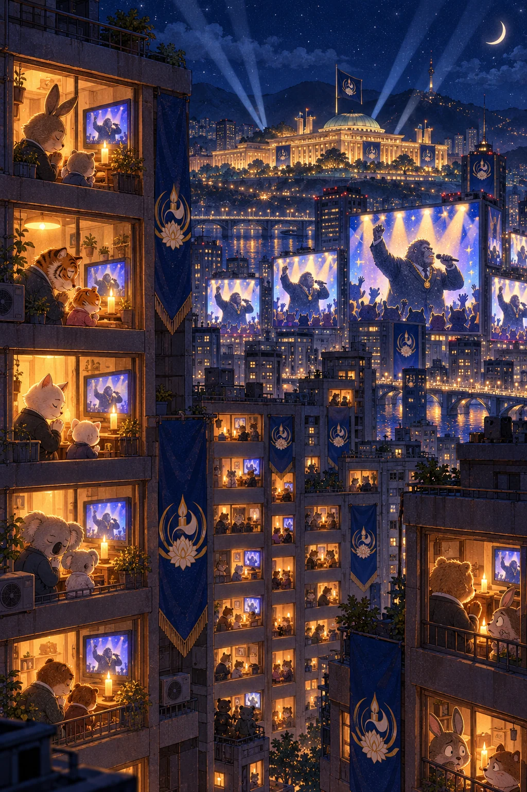
부록: 주요 인물 소개
민주시민 (대통령)
이상주의적 수사와 단호한 실리주의를 겸비한 지도자. 추모를 권력 유지의 핵심 도구로 활용하며, 국가의 생존을 위해서라면 어떤 수단도 정당화할 수 있다고 믿는다.
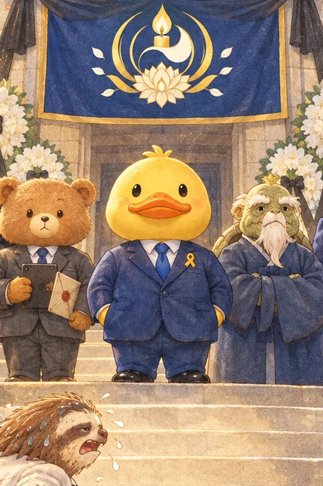
들너구리 (래퍼 겸 문화추모부 장관)
래퍼 출신으로 추모를 예술의 경지로 승화시키려는 창의적 인물. 진지함 속에 혁신을 추구하며, 대통령의 가장 믿음직한 동지.
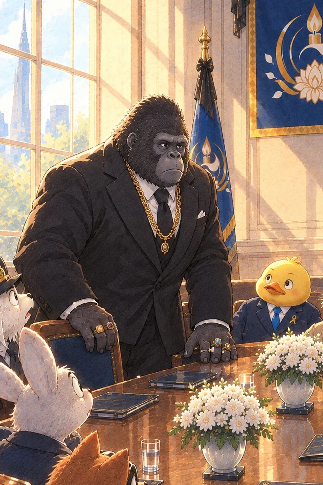
추모열사 (추모정보원장)
국정원 출신의 냉철한 관료. 감정을 배제한 기계적 보고와 정확한 데이터 분석으로 추모를 통치 도구로 완성시킨 인물.
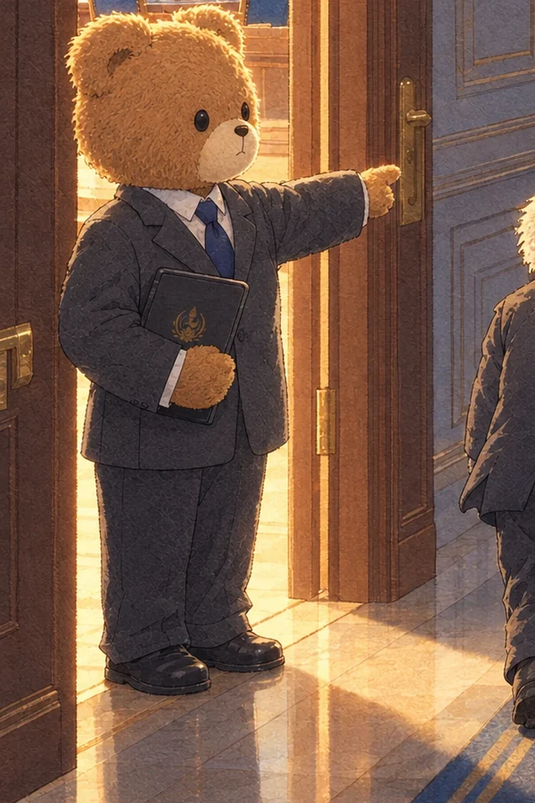
추모합니도 (추모언론통제실장)
엄숙한 관료형 인물로 추모의 신성함을 지키려 하지만, 실제로는 언론 통제를 통해 정권을 보호하는 역할을 수행.
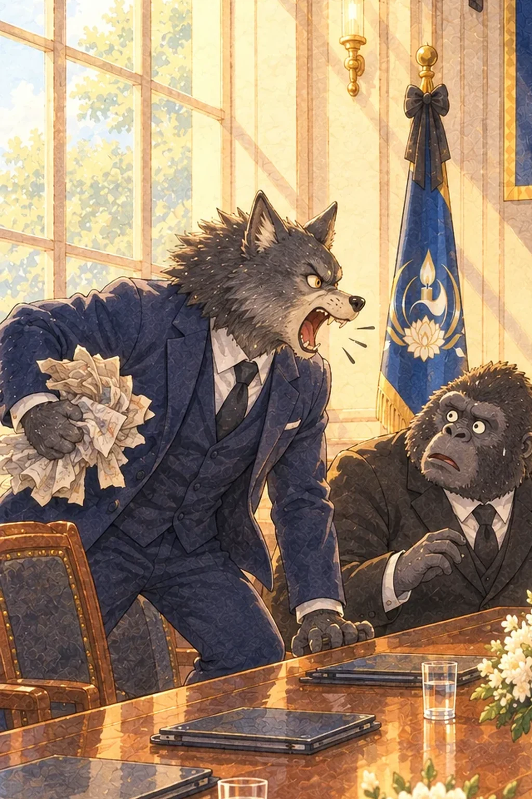
27사 이기자 (전 추모법무실장)
지각과 업무 태만으로 반추모죄의 희생양이 된 비운의 인물. 그의 몰락은 추모공화국의 공포 정치를 상징한다.
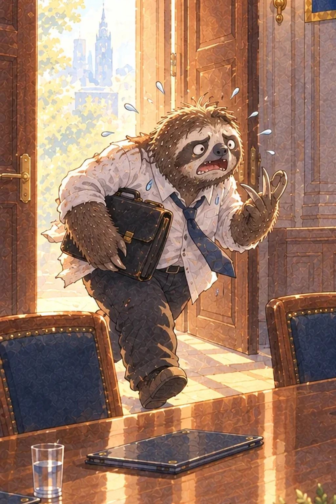
부이 (추모원로)
전통적 추모 방식을 고수하는 원로. 현 체제의 부조리함을 인식하지만 침묵으로 일관하며, 추모의 진정한 의미가 사라져가는 것을 안타까워한다.
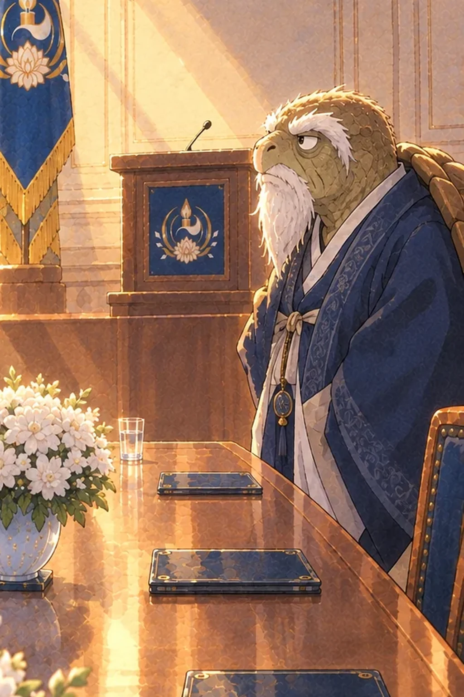
추모투수 (추모고위직)
신입이지만 추모에 진심인 열혈파. 순수하게 추모를 믿으며 체제에 충성하는 인물.
하이민주동덕 (전 추모고위직)
투덜대며 추모에 성의 없는 태도로 추방당한 인물. 27사 이기자와 함께 게으름의 상징으로 낙인찍혔다.
추모대장 (추모원로)
완전 E(외향적) 성격으로 즐거운 추모를 강요하는 광기어린 인물. 군대 선임 같은 폭력적 단합 방식으로 부조리함의 극치를 보여준다.
애국좌수 (추모교도관)
홍위병 스타일의 광신적 충성자. 존댓말 속에 담긴 폭력으로 반추모자들을 교정하며, 추모 교정 리얼리티 쇼의 주역.
미스터 다이토료 존푹타 (어그로꾼)
일베 드립을 치는 분탕꾼이자 기밀 유출 정보를 받아 체제를 조롱한 인물. 결국 추모 교정 쇼의 희생양이 되어 공개 처벌당한다.
프롤로그: 두 개의 충성
추모공화국 행정부 청사, 대통령 집무실.
민주시민은 거대한 책상 뒤에 앉아 두 사람을 바라보고 있었습니다.
왼쪽에는 딸기 추모전략실장이, 오른쪽에는 햄지 추모비서실장이 서 있었습니다. 날카로운 인상의 딸기는 냉철함이, 온화한 인상의 햄지에게서는 광기어린 순수한 빛이 감돌았습니다.
"두 분을 함께 부른 이유를 말씀드리겠습니다." 민주시민이 천천히 말문을 열었습니다.
"'추모 교정 리얼리티 쇼'의 성공으로 일시적 안정을 찾았지만, 부족합니다. 들너구리 장관의 '추모: 더 라이브' 프로젝트를 본격화할 것입니다. 이 성공을 위해 두 분의 협력이 필요합니다."
"각하." 딸기가 먼저 입을 열었습니다.
"협력 전에 현황 분석이 필요합니다. 현재 추모 참여율은 42.3%로, 공포 효과에 의한 일시적 반등일 뿐입니다. 지속 가능한 시스템을 위해서는 구조적 개편이 필요합니다."
딸기는 태블릿을 조작했습니다.
"특히 문제는 20대 청년층의 추모 이탈률 63.8%와, 고소득층의 추모 경시 현상입니다. 이들은 추모 경험치보다 경제적 가치를 우선시합니다. 추모를 사회적 지위와 연결시키지 않는 한 해결되지 않습니다."
"딸기 실장님." 햄지가 나긋나긋한 목소리로 끼어들었습니다.
"실장님께서는 항상 수치와 데이터를 말씀하시는데요. 추모가 과연 '참여율'이나 '이탈률'로 측정될 수 있는 것일까요?"
햄지가 한 걸음 앞으로 나섰습니다.
"추모는 숭고한 것입니다. 각하께서 항상 말씀하시지 않으셨습니까? '진정한 추모는 가슴에서 우러나오는 것'이라고. 실장님께서는 추모를 마치... 시장 상품처럼 분석하고 계십니다."
딸기의 표정이 차갑게 굳었습니다.
"햄지 비서실장님. 열정만으로는 국가를 운영할 수 없습니다. 각하의 말씀은 이념적 지향점일 뿐, 실무적으로는 측정 가능하고 관리 가능한 시스템이 필요합니다."
"이념적 지향점이라고요?" 햄지의 미소가 사라졌습니다.
"실장님, 각하의 말씀을 격하시키는 겁니까? 각하의 말씀은 우리가 따라야 할 절대적 진리입니다. 데이터나 효율성 따위가 아니라요."
"절대적 진리라..." 딸기가 비웃듯 말했습니다.
"그런 맹목적인 태도야말로 위험합니다. 비서실장님, 당신은 각하를 신격화하고 있습니다. 각하는 지도자이지 신이 아닙니다."
"조용히 하십시오, 두 분." 민주시민이 차분하지만 단호하게 말했습니다.
회의실이 조용해졌습니다.
민주시민은 두 사람을 번갈아 보며 말했습니다.
"두 분 모두 나에게 충성스러운 것을 알고 있습니다. 하지만 방식이 다릅니다. 딸기 실장은 전략으로, 햄지 비서실장은 신념으로 나를 따르고 있습니다."
민주시민이 자리에서 일어났습니다.
"좋습니다. 두 분 모두에게 기회를 드리겠습니다. '추모: 더 라이브' 프로젝트를 공동으로 진행하되, 각자의 방식을 적용하십시오. 딸기 실장은 당신의 전략적 개편안을, 햄지 비서실장은 당신의 순수 추모 방식을 실행하십시오."
"각하..."
"그리고." 민주시민의 눈빛이 날카로워졌습니다.
"누가 더 나은 결과를 가져오는지 보겠습니다. 승자가... 나의 진정한 최측근이 될 것입니다."
딸기와 햄지는 서로를 날카롭게 바라보았습니다.
전쟁이 시작되었습니다.
1장: 딸기의 추모 계층화 계획
추모전략실.
딸기는 거대한 모니터 앞에 서서 복잡한 그래프와 도표를 분석하고 있었습니다.
"현황을 정리하겠습니다." 딸기가 레이저 포인터로 화면을 가리켰습니다.
"추모공화국의 가장 큰 문제는 '추모 양극화'입니다. 상위 10%는 과도하게 추모하고, 하위 40%는 거의 추모하지 않습니다. 이것은 사회 계층과 직접적으로 연관되어 있습니다."
화면에는 고소득층의 추모 참여율이 23.1%라는 데이터가 보였습니다.
"보시다시피, 부유할수록 추모에 무관심합니다. 추모 경험치나 연금 따위는 그들에게 아무 의미가 없습니다."
"그렇다면 어떻게 해야 합니까?" 한 보좌관이 물었습니다.
"추모를 사회적 지위의 필수 조건으로 만드는 것입니다." 딸기가 다음 화면으로 넘어갔습니다.
[추모 계층화 시스템 (안)]
플래티넘 등급: 정부 요직 진출 우선권, 자녀 명문 학교 입학 가산점
일반 등급: 추모 연금 미지급, 공공 서비스 이용 제한, 추모 교정국 예비 대상자 등록
보좌관들이 숨을 죽였습니다.
"실장님, 이것은... 너무 가혹하지 않습니까?"
"가혹하다고요?" 딸기가 보좌관을 쳐다보았습니다.
"이것은 필연적 조치입니다. 부유층이 추모를 무시하는 이유는 불이익이 없기 때문입니다. 하지만 자녀의 교육, 사회적 지위, 공공 서비스 이용까지 추모와 연결된다면? 그들도 추모할 수밖에 없습니다."
"하지만 햄지 비서실장께서 강력하게 반대하실 텐데요..."
"햄지..." 딸기가 코웃음을 쳤습니다.
"그 사람은 광신도일 뿐입니다. 추모에 미쳐서 가정도 돌보지 않는다는 소문이 있더군요. 아내와 이혼 직전이라던데. 그런 사람이 무슨 현실적 대안을 내놓겠습니까?"
"각하께서는 현실주의자이십니다. 결국 결과를 보실 것입니다. 감정이 아니라 데이터를. 그리고 그것을 제공할 수 있는 사람은 저입니다."
딸기가 보좌관들을 둘러보았습니다.
"'추모: 더 라이브' 공연에 이 시스템을 시범 적용하겠습니다. 공연장에서 추모 등급별로 좌석을 배정하고, 플래티넘 등급에게는 특별 혜택을 제공합니다. 국민들이 직접 체감하게 만들 것입니다."
"알겠습니다, 실장님."
2장: 햄지의 순수 추모 광신
추모비서실.
햄지의 사무실은 사무실이라기보다 성전에 가까웠습니다. 벽면은 민주시민 대통령의 사진과 어록 액자로 빈틈없이 채워져 있었고, 책상 한가운데에는 각하를 닮은 노란 오리 인형이 앉아 있었습니다. 천장에까지 각하의 사진이 붙어 있어서, 의자에 등을 기대기만 해도 각하와 눈이 마주쳤습니다.
햄지는 가장 큰 사진 앞에 무릎을 꿇고 기도하듯 중얼거리고 있었습니다.
"각하... 저는 각하의 말씀을 지키겠습니다. 순수한 추모를. 진정한 추모를..."
그때, 휴대폰이 짧게 진동했습니다. 아내에게서 온 문자였습니다. 아이가 아프다는 내용이었습니다.
햄지는 화면을 잠깐 내려다보더니, 휴대폰을 조용히 뒤집어 놓고 그 위에 각하의 어록집을 살포시 올려놓았습니다.
'아빠는 지금 더 중요한 일이 있단다. 추모를 지키는 일 말이야.'
똑똑. 참모들이 들어왔습니다. 그들은 문 앞에서 일제히 멈춰 서서 벽의 사진들을 향해 3초간 묵념한 뒤에야 안으로 들어섰습니다. 추모비서실의 오래된 규칙이었습니다.
"비서실장님, 딸기 실장이 '추모 계층화' 계획을 본격 추진하고 있습니다."
"그래요..." 햄지가 천천히 고개를 들었습니다. 눈빛에는 광기가 서려 있었습니다.
"계층화... 추모를 돈과 권력으로 나눈다... 이것이 얼마나 신성모독적인 일인지 그 사람은 모르고 있습니다."
햄지가 벌떡 자리에서 일어났습니다. 양 볼이 빵빵하게 부풀어 있었습니다.
"추모는 평등합니다. 모두가 똑같이 추모해야 합니다. 이것이 각하께서 말씀하신 진정한 추모입니다!"
"비서실장님, 그렇다면 우리는 어떻게 대응해야 합니까?"
"'순수 추모 운동'을 시작합니다."
햄지가 화이트보드에 '순수 추모 서약문'을 써 내려갔습니다. 키가 닿지 않아 회전의자 위에 올라선 채였고, 참모 둘이 흔들리는 의자를 필사적으로 붙잡고 있었습니다.
[순수 추모 서약문]
나는 추모 경험치, 연금, 사회적 지위를 바라지 않습니다.
나는 오직 고인에 대한 순수한 마음으로 추모합니다.
의자에서 내려온 햄지는 서랍에서 상자 하나를 꺼냈습니다. 뚜껑을 열자 금빛이 쏟아졌습니다. 각하의 얼굴이 새겨진 배지들이었습니다. 햄지가 밤새 손수 만든 것이었습니다.
"서약한 사람들에게는 '순수 추모자' 금색 배지를 수여합니다. 그들이야말로 각하께서 원하시는 진정한 국민입니다. 딸기의 계층화 시스템 따위는 이 순수함 앞에서 무너질 것입니다!"
"하지만 비서실장님..." 한 참모가 조심스럽게 말했습니다. "국민들이 과연 보상 없이 추모할까요? 현실적으로..."
"현실적으로요?" 햄지가 참모를 쳐다보았습니다. 방 안의 온도가 몇 도쯤 내려간 것 같았습니다.
"추모는 타협하지 않습니다! 각하께서 '추모는 순수해야 한다'고 하셨습니다! 국민들이 보상 없이는 추모하지 않는다면, 우리가 그들에게 진정한 추모가 무엇인지 가르쳐야 합니다!"
참모들은 햄지의 광기 어린 열정에 압도되었습니다. 방금 질문했던 참모는 아무 말 없이 상자에서 배지 하나를 꺼내 자기 가슴에 달았습니다. 손이 조금 떨리고 있었습니다.
햄지는 창가로 걸어갔습니다. 마당 건너편, 추모전략실 창문에서 차가운 푸른 불빛이 새어 나오고 있었습니다.
"그리고... 딸기를 각하로부터 멀어지게 해야 합니다. 그 사람은 각하의 순수한 이상을 오염시키고 있습니다. 각하께는 제가 필요합니다."
어록집 아래에서, 휴대폰이 다시 한 번 진동했습니다.
햄지는 이번에도 보지 않았습니다.
3장: 들너구리의 고뇌
문화추모부 장관실.
벽에는 금빛 레코드판들이 줄지어 걸려 있었고, 구석에는 낡은 마이크 스탠드가 서 있었습니다. 책상 위에는 '추모: 더 라이브' 무대에 걸릴 들너구리의 대형 영정 사진 시안이 세 장 놓여 있었습니다. 웃는 얼굴, 진지한 얼굴, 먼 곳을 바라보는 얼굴. 아직 하나를 고르지 못한 채였습니다.
들너구리는 그 시안들 사이에 머리를 묻고 있었습니다. 금목걸이가 책상에 부딪혀 짤랑 소리를 냈습니다. 딸기와 햄지의 대립이 그를 지치게 만들고 있었습니다.
"장관님! 제가 먼저..." 추모투수가 힘차게 손을 들며 들어오다가, 분위기를 보고는 슬그머니 손을 내렸습니다. 그러고는 위로의 뜻으로 바나나 우유 하나를 책상 위에 살며시 올려놓았습니다.
들너구리는 한숨을 쉬었습니다.
"딸기 실장은 제 공연을 '전략적 도구'로, 햄지 비서실장은 '신성한 의식'으로만 보고 있습니다. 둘 다 제 예술적 의도는 관심이 없어요."
"장관님의 예술적 의도라면요?"
들너구리가 바나나 우유에 빨대를 꽂으며 천천히 말했습니다.
"저는 그냥... 제가 살아있을 때 제 삶을 돌아보고 싶었을 뿐입니다. 저를 추모한다는 것은 제 삶을 예술로 승화시키는 것이었어요. 하지만 이제는 정치적 싸움의 도구가 되어버렸습니다."
"오늘 딸기 실장이 제게 말했어요." 들너구리가 딸기의 무표정한 말투를 그대로 흉내 냈습니다.
"'장관님의 1번 곡은 타겟 연령층 추모 경험치 획득 잠재력이 현저히 낮습니다. 2절 가사를 수정하십시오.'"
그가 서랍에서 종이 한 장을 꺼냈습니다. 딸기가 보낸 2절 가사 수정본이었습니다. 빨간 줄이 어찌나 많은지, 가사보다 빨간 줄이 더 길었습니다.
들너구리가 쓴웃음을 지었습니다. "제 곡을 타겟 연령층으로 분석한다고요. 이게 예술입니까?"
"햄지 비서실장은 더 심합니다."
들너구리가 책상 옆의 상자를 턱으로 가리켰습니다. 각하의 얼굴이 새겨진 금색 배지가 가득 들어 있었습니다. '공연 당일 관객 전원에게'라는 쪽지와 함께였습니다.
"그 사람은 제게 공연 중간에 '각하의 어록 낭독 시간'을 넣자고 했어요. 관객들이 절을 하면서 '진정한 추모는 순수해야 한다'를 외치는 시간을요. 저는 콘서트를 하는 건지 종교 의식을 하는 건지 모르겠어요."
들너구리는 구석의 마이크를 집어 들고 힘없이 읊조렸습니다.
"왼쪽엔 데이터, 오른쪽엔 신앙... 그 사이에 낀 내 노래는 어디로 가야 하나... 예..."
추모투수가 혼자 박수를 치려다가, 들너구리의 표정을 보고 조용히 손을 내렸습니다.
"두 사람의 요구를 모두 거절하시는 것은 어떻습니까?" 추모투수가 물었습니다.
"불가능합니다. 각하께서 직접 명령하셨어요. 두 사람 모두와 협력하라고. 저는... 저는 그저 살아남고 싶을 뿐입니다."
4장: 막이 오르기까지
추모공화국 행정부 복도.
각하의 승인 도장이 찍힌 결재판을 안고 나오던 딸기 앞에 햄지가 서 있었습니다. 가슴에는 금색 배지가 세 개나 달려 있었습니다.
"실장님, 하나만 여쭙겠습니다. 실장님은 정말로 추모를 사랑하십니까?"
"사랑은 측정이 안 됩니다. 그래서 저는 참여율을 봅니다." 딸기는 걸음을 멈추지 않았습니다.
햄지가 종종걸음으로 따라붙었습니다. 딸기의 한 걸음은 햄지의 세 걸음이었습니다. "자녀 입학 가산점, 취업 우대… 추모를 신용등급처럼 나누셨더군요. 각하의 말씀을 정면으로 거스르는 겁니다."
딸기가 그제야 멈춰 섰습니다.
"비서실장님. 가정도 못 챙기시는 분이 나라의 추모를 챙기시겠다니 걱정입니다. 이혼 직전이시라던데요."
햄지의 얼굴에서 핏기가 빠졌습니다. 딸기는 결재판을 고쳐 안고 복도 끝으로 사라졌습니다.
햄지는 한참을 그 자리에 서 있었습니다. 그러다 주머니에서 수첩을 꺼내 맨 앞장 '딸기'라는 이름 아래에 줄을 하나 더 그었습니다. 이미 열한 줄이 그어져 있었습니다.
문화추모부 대회의실. '추모: 더 라이브' 최종 기획회의.
들너구리가 큐시트를 넘기기도 전에 손 두 개가 동시에 올라갔습니다. 추모투수도 습관처럼 손을 번쩍 들었다가, 할 말이 없다는 걸 깨닫고 슬그머니 내렸습니다.
"1부와 2부 사이에 '국민 참여 코너'를 넣겠습니다. 국민 다섯 명이 무대에서 추모를 발표하고, 현장 심사로 등급을 올려 드립니다." 딸기였습니다.
"저는 '순수 추모 서약식'을 넣겠습니다. 보상을 거부하고 오직 마음으로 추모하겠다고 서약하는 시간입니다." 햄지였습니다.
"서약식은 비효율적입니다. 인센티브가 없으면 참여는 반드시 떨어집니다."
"각하께서 작년 추모의 날 기념사에서 말씀하셨습니다. '추모는 숫자가 아니다. 추모는 마음이다.'"
딸기의 입이 잠깐 열렸다가 닫혔습니다. 각하의 연설을 숫자로 반박할 방법은 없었습니다. 햄지가 처음으로 딸기를 이긴 순간이었고, 햄지는 그 순간을 오래 곱씹었습니다. 볼 주머니에 해바라기씨를 넣고 오물오물 곱씹듯이.
"둘 다 하십시오." 민주시민이 말했습니다. "1부와 2부 사이에는 국민 참여 코너, 2부와 3부 사이에는 서약식. 반응은 숫자로 보겠습니다."
들너구리는 자기 큐시트를 내려다보았습니다. 1부, 국민 참여 코너, 2부, 서약식, 3부. 자기 공연인데 자기 칸은 점점 좁아지고 있었습니다.
"그리고 추모대장님. 공연 분위기를 맡아 주십시오. 관객들이 즐겁게 추모할 수 있도록."
"영광입니다, 각하!"
회의가 끝나고 모두 나간 뒤, 민주시민은 추모대장을 따로 불러 봉투 하나를 건넸습니다. 봉투에는 '3부'라는 두 글자만 적혀 있었습니다.
봉투를 열어 본 추모대장은 평소보다 훨씬 환하게 웃었습니다. 평소에도 늘 웃는 얼굴이었으니, 그건 꽤 무서운 일이었습니다.
공연까지 남은 일주일 동안 두 사람은 말 대신 서류로 싸웠습니다.
햄지는 국민 참여 코너 신청자 명단에 순수파 노인 다섯 명의 이름을 몰래 끼워 넣었습니다. 다음 날 아침, 다섯 명 모두에게 똑같은 문자가 갔습니다.
[신청 서류 미비로 접수가 취소되었습니다. — 추모전략실]
무슨 서류가 미비했는지는 아무도 알지 못했습니다.
딸기는 서약 부스 자리를 배정했습니다. 2층 남자 화장실 옆, 소화기 뒤였습니다.
햄지는 플래티넘 관객용 기념품 상자를 열어 고급 만년필을 모두 빼냈습니다. 그 자리에는 각하의 얼굴이 새겨진 금색 배지를 채워 넣었습니다.
딸기는 그 배지마다 바코드를 붙였습니다. 달고 다니기만 해도 추모 경험치가 1씩 쌓이도록.
소식을 들은 햄지는 그날 밤 배지 오백 개에서 바코드를 손톱으로 하나하나 긁어냈습니다. 손톱이 세 개 부러졌습니다.
공연 전날 밤 11시.
추모전략실의 딸기는 참가자 프로필을 넘기고 있었습니다. 자녀 입학, 공기업 취업, 사업 지원금, 남편 승진. 동기가 분명한 사람만 남겨 두었습니다.
"이게 진짜 국민입니다."
화면을 끄고 서랍을 닫으려던 딸기의 손이 잠깐 멈췄습니다. 서랍 맨 아래에 카드 한 장이 있었습니다. 딸기 자신의 추모 등급 카드였습니다.
브론즈. 최근 3년 추모 참여 2회. 둘 다 회사 단체 일정이었습니다.
딸기는 카드를 서랍 깊숙이 밀어 넣고 서랍을 잠갔습니다.
같은 시각, 추모비서실. 햄지는 가장 큰 각하 사진 앞에 무릎을 꿇고 있었습니다. 부러진 손톱 세 개에는 반창고가 감겨 있었습니다.
휴대폰이 진동했습니다. 아내였습니다. 햄지는 휴대폰을 무음으로 돌리고 다시 눈을 감았습니다.
"각하, 내일 증명하겠습니다."
벽의 각하도, 천장의 각하도, 책상 위 오리 인형도 대답이 없었습니다.
같은 시각, 부이의 집. 늦게 찾아온 추모투수가 두렵다고 털어놓았지만 부이는 대꾸 없이 차만 따랐습니다. 탁자 위에는 햄지가 국무위원들에게 돌린 견본 서약서 한 장이 반듯하게 접혀 있었습니다.
"원로님, 그건…"
부이는 서약서를 집어 품에 넣었습니다. "내일 보십시오." 그게 전부였습니다.
같은 시각, 문화추모부 장관실. 들너구리는 영정 사진 시안 세 장 가운데 마침내 하나를 골랐습니다. 먼 곳을 바라보는 얼굴이었습니다.
그러고 나서 큐시트를 마지막으로 확인하다가 손이 멈췄습니다. 3부 칸에 적어 둔 곡 목록 위에 누군가 노란 스티커를 붙여 놓았습니다.
[추후 공지]
들너구리가 추모대장에게 전화를 걸었습니다.
"각하 지시입니다! 걱정 마십시오, 장관님! 3부는 정말, 정말 즐거울 겁니다!"
전화가 끊겼습니다. 수화기 너머로 마지막에 들린 건 호루라기 소리였습니다.
공연 당일, 문화추모부 대극장.
입구는 다섯 개였습니다. 플래티넘 입구에는 레드카펫이 깔려 있었고, 브론즈와 일반 등급의 4번 입구는 주차장 쪽 비상계단이었습니다. 계단 줄은 건물을 반 바퀴 돌아 있었습니다.
브론즈 줄에 선 아이가 아빠의 소매를 당겼습니다.
"아빠, 저 사람들은 왜 저쪽 문으로 가?"
"추모를 더 많이 해서 그래."
"그럼 우리는 누가 더 죽어야 저기 갈 수 있어?"
아빠가 황급히 아이의 입을 막았습니다. 앞뒤 사람들은 못 들은 척했지만 몇몇은 고개를 끄덕이고 있었습니다.
그 줄 옆으로 남자 하나가 교도관 둘에게 양팔을 붙잡혀 지하 주차장 쪽으로 끌려가고 있었습니다. 셔츠는 반쯤 찢어져 있었고, 목에 건 명함 지갑이 계단 난간에 부딪힐 때마다 탁, 탁 소리를 냈습니다. 명함에는 '추모공화국 홍보실장 최무현'이라고 적혀 있었습니다.
"저 사람 어디서 많이 봤는데…" 누군가 중얼거렸지만 줄은 조금도 흐트러지지 않았습니다. 다들 자기 등급 카드만 내려다보고 있었습니다.
"브론즈 관객 67%가 '다음에는 꼭 더 높은 등급을 받겠다'고 응답했습니다." 보좌관의 보고에 딸기가 고개를 끄덕였습니다.
"상위 등급은 우월감을, 하위 등급은 상승 욕구를. 설계대로입니다."
2층 남자 화장실 옆, 소화기 뒤. 햄지는 서약 부스에 혼자 서 있었습니다. 앞을 지나는 사람은 모두 화장실에 가는 사람이었습니다.
손을 씻고 나오던 남자 하나가 젖은 손으로 서약서를 한 장 집어 들었습니다. 햄지의 눈이 반짝 빛났습니다. 남자는 서약서로 손을 닦고는, 꾸깃꾸깃 접어 휴지통에 넣고 갔습니다.
지팡이를 짚은 부이가 천천히 지나가며 햄지에게 고개를 한 번 끄덕였습니다. 그뿐이었습니다.
조명이 꺼졌습니다. 스포트라이트 아래로 들너구리가 걸어 나왔습니다. 무대 뒤 대형 스크린에는 들너구리가 끝내 고른 영정 사진, 먼 곳을 바라보는 얼굴이 떠올랐습니다.
"저는 들너구리입니다. 오늘 저는, 아직 살아 있는 저 자신을 추모하려 합니다."
비트가 깔리고 첫 곡 '나의 청춘을 추모하라'가 시작됐습니다.
"지하 공연장에서 랩을 했지, 아무도 안 들어줬지
조롱당했지, 무시당했지, 하지만 나는 멈추지 않았지
나의 청춘을 추모하라, 죽은 꿈을 기억하라
그것이 지금의 나를 만들었어"
뒤쪽 스크린에는 젊은 시절의 들너구리가 나왔습니다. 관객이 세 명뿐인 지하 무대에서 땀범벅으로 랩을 하는 모습이었습니다. 일반석 몇 군데에서 코를 훌쩍이는 소리가 났습니다.
VIP석은 달랐습니다.
"이게 추모야? 그냥 자기 자랑이잖아."
"기념품 만년필 준다더니 웬 배지야. 바코드도 없고."
딸기의 태블릿에 숫자가 떴습니다. 감동 지수는 높았고 추모 참여 의지는 낮았습니다. 딸기는 그 화면을 캡처해 두었습니다.
마지막 곡을 마친 들너구리가 무대 뒤로 들어오다가 추모대장과 마주쳤습니다. 추모대장은 '3부' 봉투를 품에 넣은 채 휘파람을 불고 있었습니다.
"장관님, 1부 정말 감동적이었습니다! 자, 이제 제 차례입니다!"
무대에 다시 조명이 켜졌습니다.
이제 딸기의 국민 참여 코너 차례였습니다.
5장: 국민 참여 코너 - 딸기의 승부수
"여러분!"
삑— 호루라기 소리와 함께 사회자가 무대 한가운데로 뛰어나왔습니다. 추모대장이었습니다. 그는 두 팔을 활짝 벌렸습니다.
"1부 정말 감동적이었죠? 박수!"
관객들이 박수를 쳤습니다. VIP석의 박수만 반 박자 늦었습니다.
"이제 특별한 코너입니다! '국민 참여 추모 경연대회'! 다섯 분의 추모꾼이 무대에 올라 자신만의 추모를 발표하고, 현장 심사로 등급 승격의 기회를 얻습니다!"
객석이 술렁였습니다.
"심사위원을 소개합니다! 대통령 민주시민 각하!"
민주시민이 VIP석에서 일어나 손을 흔들자 환호가 터졌습니다.
"추모전략실장 딸기님!"
딸기가 심사위원석에 앉으며 짧게 미소 지었습니다.
"추모정보원장 추모열사님!"
추모열사는 무표정하게 앉았습니다. 앉은 뒤에도 표정은 조금도 달라지지 않았습니다. 그의 태블릿에는 참가자 다섯 명의 신상 정보가 이미 떠 있었습니다. 아무도 제출한 적 없는 정보까지.
첫 번째 참가자는 김민수였습니다. 원고지를 쥔 손이 떨리고 있었습니다.
"서른두 살 회사원 김민수입니다. 아내와 두 아이를 키우고 있습니다."
"현재 등급은요?"
"브론즈입니다…" 목소리가 작아졌습니다. "요즘 대형추모건이 통 안 터져서요. 빅 스타 고갈 사태 이후로는 경험치 쌓을 기회가 없었습니다."
객석의 브론즈 추모꾼들이 일제히 고개를 끄덕였습니다. "맞아, 빅 스타 한 명만 가도 대박인데…"
"그래도 오늘은 꼭 플래티넘을 받고 싶습니다. 큰애가 내년에 초등학교에 들어갑니다. 플래티넘이면 명문 학교 입학 가산점이 나온다고 해서요."
김민수가 원고지를 펼쳤습니다.
"저는 제 할아버지를 추모합니다. 할아버지는 10년 전에 돌아가셨습니다. 저에게 성실함과 정직함, 그리고 가족의 소중함을 가르쳐 주셨습니다…"
목소리가 점점 커지더니, 어느 순간 눈물이 터졌습니다.
"할아버지께서 살아 계셨다면 제 아이들을 얼마나 예뻐하셨을까요… 할아버지, 저는 할아버지를 진심으로 추모합니다!"
김민수가 무릎을 꿇고 절을 했습니다. 객석에서 박수가 쏟아졌습니다.
딸기가 태블릿을 두드렸습니다.
"감정 표현 8점. 진정성 7점. 추모 경험치 획득 잠재력 9점. 그리고 참가자께서는 가산점이 필요하다고 솔직하게 말씀하셨습니다. 아주 좋습니다. 정직하니까요. 추모는 실용적이어야 오래갑니다."
딸기가 버튼을 눌렀습니다.
"플래티넘으로 즉시 승격합니다."
"정말입니까?!"
김민수가 다시 절을 했습니다. 이번에는 심사위원석을 향해서였습니다. 아까 할아버지께 올린 절보다 조금 더 깊었습니다.
객석이 술렁였습니다.
"솔직하게 말하니까 플래티넘 줬잖아."
"아이 학교 때문이라고 하면 되는 거구나."
맨 뒷줄의 누군가는 수첩을 꺼내 받아 적고 있었습니다. 할아버지, 가산점, 눈물.
무대 뒤에서 햄지가 주먹을 꽉 쥐었습니다. 반창고를 감은 손가락이 욱신거렸습니다. '이건 추모가 아니다. 거래다.'
두 번째 참가자 이지은은 스물여덟 살 취업준비생이었습니다. "골드 등급이면 공기업 가산점이 나와서요. 저는 외할머니를 추모합니다."
세 번째 참가자 박철수는 자영업자였습니다. "실버 이상이어야 사업 지원금이 나옵니다. 저는 아버지를 추모합니다."
네 번째 참가자 최은영은 무대에 오르자마자 말했습니다.
"남편 공기업 승진 때문에 나왔습니다. 추모 대상은…"
최은영이 손바닥에 적어 온 글씨를 들여다보았습니다.
"시아버지입니다."
참가자가 바뀔 때마다 동기는 앞으로, 고인은 뒤로 밀려났습니다. 딸기는 네 사람 모두에게 후한 점수를 주었습니다.
"정직합니다. 현실적입니다. 이것이 진짜 추모꾼의 모습입니다."
다섯 번째 참가자 정우진은 이미 골드 등급이었습니다.
"이미 골드신데 왜 나오셨습니까?"
"플래티넘이 되고 싶습니다. 공무원인데, 고위직으로 승진하려면 플래티넘이 필요합니다. 지난 1년간 추모 행사에 47회 참여했지만 대형추모건이 없어서 경험치가 모자랍니다."
"추모 발표를 해 주십시오."
"저는 제 부모님을 추모합니다. 5년 전 교통사고로 돌아가셨습니다. 저를 키우시느라 고생하셨습니다. 감사드립니다. 이상입니다."
정우진은 허리를 정확히 90도로 숙였다가 정확히 1초 뒤에 폈습니다.
객석이 조용해졌습니다. 너무 짧았고 감정이 없었습니다.
"감정 표현 3점. 진정성 2점." 딸기가 담담하게 말했습니다. "하지만 지난 1년간 47회 참여. 대형추모건이 없는 상황에서도 꾸준히 경험치를 쌓으셨습니다. 이것은 헌신입니다."
딸기가 버튼을 눌렀습니다.
"플래티넘, 승격입니다."
객석에서 야유가 터졌습니다.
"감정도 없잖아!"
"저게 추모야?"
하지만 반대쪽에서는 다른 목소리가 나왔습니다.
"뭐 어때, 우리도 어차피 대형추모건만 기다리잖아."
"감정이고 뭐고 등급이 중요하지."
딸기는 개의치 않고 민주시민을 돌아보았습니다. 민주시민은 아무 표정 없이 무언가를 적고 있었습니다. 딸기의 자리에서는 무엇을 적는지 보이지 않았습니다.
"국민 참여 코너, 마치겠습니다!" 추모대장이 팔을 번쩍 들었습니다. "여러분, 보셨죠? 열심히 하면 누구나 승격할 수 있습니다!"
객석 여기저기서 웅성거림이 일었습니다.
"그래도 대형추모건 한 방이 제일 빠르긴 하지…"
"다음 건은 언제 터지려나."
그 말을 들은 추모대장의 미소가, 아주 조금 더 커졌습니다.
6장: 2부 공연 - 살아있는 자의 추모
무대가 다시 어두워졌습니다.
들너구리는 무대로 나가기 전에 무대 옆을 한 번 돌아보았습니다. 추모대장이 '3부' 봉투를 부채처럼 흔들며 엄지를 들어 보였습니다.
들너구리는 목에 걸린 금목걸이를 풀어 추모투수에게 건넸습니다. 생각보다 무거웠는지, 추모투수가 두 손으로 받아 들고 한 걸음 휘청였습니다.
어쩌면 오늘 자기 노래는 여기까지일지도 몰랐습니다.
"2부는 현재의 추모입니다. 지금 이 순간 살아 있는 저를 추모하겠습니다."
1부보다 무거운 목소리였습니다. 비트가 낮게 깔렸습니다.
"나는 지금 여기 서 있어
살아 있어, 숨 쉬고 있어
하지만 나는 나를 추모해
나는 이미 죽어가고 있으니까
나는 래퍼였어
이제는 정치인이야
그 래퍼를 추모해
그는 이미 죽었어, 내 안에서"
스크린에는 지금의 들너구리가 나왔습니다. 회의에 앉아 있는 모습, 서류에 도장을 찍는 모습, 그리고 지친 얼굴로 거울을 들여다보는 모습. 곡이 끝날 무렵 무대 위로 커다란 액자 하나가 천천히 내려왔습니다. 어젯밤 고른 영정 사진, 먼 곳을 바라보는 얼굴이었습니다.
객석은 묘한 침묵에 빠졌습니다. 감동이 아니라 불편함이었습니다.
"너무 우울한 거 아냐?"
"이런 거 보러 온 건가."
"대형추모건 하나 터지면 저 사람 추모할 일도 없을 텐데."
옆 사람이 "쉿" 했지만, 웃음을 참느라 새어 나온 소리였습니다.
딸기가 태블릿을 확인했습니다.
"관객 반응 지수 6.2. 자기연민은 팔리지 않습니다."
들너구리가 두 곡을 더 부르는 동안 객석은 점점 식어 갔습니다. VIP석의 플래티넘 추모꾼들은 하품을 했습니다.
"언제 끝나요?"
"3부도 있다던데."
"만년필도 안 주고…"
맨 앞줄의 누군가는 가슴에 달린 금색 배지를 슬그머니 떼어 의자 밑으로 떨어뜨렸습니다. 햄지가 밤새 손톱으로 바코드를 긁어낸 배지 가운데 하나였습니다.
마지막 곡이 끝나고 들너구리가 고개를 숙였습니다. 박수는 짧았습니다. 고개를 들자 머리 위에 자기 영정 사진이 걸려 있었습니다. 웃지도 울지도 않고, 먼 곳만 바라보는 얼굴이었습니다.
무대 옆에서는 추모투수가 금목걸이를 두 손에 꼭 쥔 채, 혼자서 끝까지 박수를 치고 있었습니다.
두 번째 휴식 시간이 왔습니다.
이제 햄지의 순수 추모 서약식 차례였습니다.
7장: 순수 추모 서약식 - 햄지의 승부수
무대가 바뀌었습니다.
들너구리의 영정 사진 앞을 거대한 민주시민 대통령의 사진이 가렸습니다. 그 아래에는 금색 천을 덮은 제단이 차려졌고, 제단 위에는 서약서 더미와 금색 배지 상자가 놓였습니다. 배지마다 바코드를 긁어낸 자국이 남아 있었습니다.
햄지가 무대에 올랐습니다. 손가락 세 개에 반창고가 감겨 있었습니다.
"국민 여러분. 아까 국민 참여 코너를 보셨습니까? 사람들이 등급을 위해, 혜택을 위해, 가산점을 위해 추모했습니다."
햄지의 목소리가 떨렸습니다.
"그것이 진정한 추모입니까? 각하께서 말씀하셨습니다. '추모는 숫자가 아니다. 추모는 마음이다.'"
햄지가 대통령 사진을 향해 무릎을 꿇었습니다.
"저는 아무것도 바라지 않습니다. 경험치도, 등급도, 대형추모건도 기다리지 않습니다. 저는 오직 순수한 마음으로 기억하고, 존경하고, 사랑합니다."
햄지가 몸을 돌려 객석을 바라보았습니다.
"여러분 중에 저와 같은 마음을 가진 분이 계십니까? 보상 없이, 순수한 마음으로 추모하고 싶은 분, 일어나 주십시오."
극장이 조용해졌습니다.
10초. 20초. 30초.
아무도 일어나지 않았습니다. 어디선가 휴대폰 진동이 울렸고, 누군가 추모 알림인가 싶어 급히 화면을 확인했습니다. 무대 옆에서는 추모대장이 손목시계를 톡톡 두드리고 있었습니다.
"순수하게 추모? 그게 먹여 줘?" 뒷줄에서 누군가 중얼거렸습니다.
햄지의 미소가 굳어 갔습니다.
그때 객석 뒤편에서 지팡이 소리가 났습니다.
한 노인이 천천히 일어섰습니다. 조명이 뒤늦게 그를 찾아 비췄습니다.
햄지가 숨을 삼켰습니다. "원로님…?"
무대 옆에서 쨍그랑, 소리가 났습니다. 추모투수가 들고 있던 들너구리의 금목걸이를 놓친 소리였습니다.
객석이 술렁였습니다.
"부이 원로 아냐?"
"원로님이 왜…"
부이는 천천히 무대로 걸어 올라와 햄지 옆에 섰습니다. 제단 위의 서약서 더미는 쳐다보지도 않았습니다. 대신 품에서 반듯하게 접힌 서약서 한 장을 꺼냈습니다. 접힌 자국이 닳아 있었습니다. 밤새 몇 번이고 펼쳐 본 종이 같았습니다.
"저는 평생 추모꾼으로 살았습니다." 부이가 말했습니다. "요즘 사람들은 대형추모건을 기다립니다. 누군가 죽기를 기다립니다. 저는 그것을 추모라고 생각하지 않습니다. 저는 그저, 죽은 이들을 기억하고 싶을 뿐입니다."
부이가 서약서에 서명했습니다.
햄지가 손짓으로 대통령 사진 쪽을 가리켰습니다. 하지만 부이는 사진을 등지고 돌아서서, 객석 너머 어딘가를 향해 깊이 절을 했습니다. 누구에게 올린 절인지 아는 사람은 없었습니다. 햄지만 당황한 얼굴로 사진과 부이를 번갈아 보았습니다.
객석에서 박수가 터졌습니다.
그 박수에 용기를 얻은 듯 한 명, 두 명, 세 명… 노인들이 일어나기 시작했습니다.
"저도 하겠습니다."
"저도요."
모두 약 50명이었습니다. 대부분 60대 이상이었습니다. 햄지는 한 사람 한 사람의 가슴에 직접 금색 배지를 달아 주었습니다. 반창고 감은 손가락이 떨렸고, 눈에서는 눈물이 흘렀습니다.
"감사합니다… 여러분이야말로 진정한 추모꾼입니다…"
배지를 받은 한 할머니는 손수건을 꺼내 배지에 남은 긁힌 자국을 정성껏 닦았습니다.
객석의 젊은 추모꾼들은 팔짱을 끼고 있었습니다.
"등급도 안 올려 준대."
"시간 낭비지."
딸기가 태블릿을 확인했습니다.
"참여율 1%. 참여자 평균 연령 67세. 20대에서 40대 참여율 0.2%. 예상대로입니다."
그렇게 말하면서도 딸기의 시선은 잠깐 부이에게 머물렀습니다. 숫자로는 설명되지 않는 장면이었습니다. 딸기는 이번에는 화면을 캡처하지 않았습니다.
민주시민은 VIP석에서 여전히 무언가를 적고 있었습니다.
서약식이 끝나고 햄지는 탈진한 얼굴로 무대 뒤로 물러났습니다.
'50명… 5,000명 중에 겨우 50명…'
주머니 속에서 휴대폰 화면이 켜졌습니다. 무음이었지만 빛은 숨길 수 없었습니다.
[아이가 입원했습니다. 고열이 내리지 않습니다. 제발 와 주세요.]
햄지는 화면을 내려다보며 울었습니다.
'미안하다… 하지만 지금은… 각하를 위해…'
휴대폰을 다시 주머니에 넣는 순간, 무대 쪽에서 사이렌이 울리기 시작했습니다.
8장: 추모 교정 특별무대
삐-, 삐-, 삐-.
마지막 3부가 시작됐지만 들너구리는 무대에 나오지 않았습니다. 무대는 붉은 조명으로 물들었고, 대통령 사진이 치워지자 그 뒤에 걸려 있던 들너구리의 영정 사진이 다시 드러났습니다.
무대 옆에서 추모대장이 '3부' 봉투를 머리 위로 흔들며 뛰어나왔습니다.
"여러분! 3부는 특별 무대입니다! 바로… '추모 교정 특별 라이브'!"
"추모 교정? 그거 리얼리티 쇼 아냐?"
"무대에서 직접 한다고?"
"재밌겠는데!"
무대 뒤에서 들너구리는 손에 쥔 큐시트를 천천히 구겼습니다. 옆에 있던 추모투수가 바나나 우유를 내밀려다가 그대로 멈췄습니다.
"여러분! 추모공화국에는 나쁜 추모꾼들이 있습니다! 대형추모건이 터져도 게으른 추모꾼, 경험치만 노리는 가짜 추모꾼! 이런 사람들을 어떻게 해야 할까요?"
"교정해야죠!" 플래티넘석에서 누군가 소리쳤습니다.
"맞습니다! 그럼 추모 교정의 대가, 추모교도관 애국좌수님을 모시겠습니다!"
깔끔한 정장에 가죽 장갑을 낀 애국좌수가 공손하게 고개를 숙이며 등장했습니다. 그 뒤로 손이 묶인 세 사람이 끌려 나왔습니다.
"첫 번째, 김만우님! 지난 6개월 동안 추모 행사에 단 한 번도 나오지 않았습니다! 그사이 대형추모건이 세 번이나 터졌는데도요!"
야유가 쏟아졌습니다. 무대 스크린에는 김만우의 휴대폰 설정 화면이 떠올랐습니다. 추모 알림이 '방해 금지'로 꺼져 있었습니다. 야유가 두 배로 커졌습니다.
"저, 저는… 바빠서…"
"바쁘셨군요." 애국좌수가 김만우의 어깨에 손을 올렸습니다. "정말 죄송합니다만, 그건 변명이 되지 않습니다."
애국좌수의 손에 힘이 들어갔습니다.
"아악!"
"소리 지르지 마십시오. 듣기 싫습니다."
김만우는 무릎을 꿇은 채 객석을 향해 외쳤습니다.
"대형추모건을 놓쳐서 죄송합니다! 추모를 게을리해서 죄송합니다!"
박수가 터졌습니다.
"두 번째, 심진우님! 대형추모건마다 참여는 했지만 진심이 없었습니다! 오직 경험치만 노렸습니다!"
스크린에 심진우의 추모 기록이 떠올랐습니다. 참여 시간은 매번 정확히 1분 1초였습니다. 경험치가 들어오는 최소 시간이었습니다.
"저는 매번 참여했다고요!"
"참여는 하셨죠." 애국좌수가 고개를 끄덕였습니다. "하지만 진심이 없으셨습니다. 그건 추모를 가장한 사기입니다."
애국좌수가 심진우의 뺨을 가볍게 때렸습니다.
"아!"
"아, 죄송합니다. 손이 미끄러졌습니다."
객석에서 웃음이 터졌습니다. 1부 리얼리티 쇼를 본 사람들은 그 대사를 알고 있었습니다.
"한 번 더 미끄러지셔도 괜찮습니다!" 누군가 소리쳤습니다.
"여러분이 원하신다면…"
애국좌수가 미소 지으며 다시 손을 휘둘렀습니다. 이번에는 더 세게.
"정말 죄송합니다. 또 미끄러졌습니다."
객석이 웃음바다가 됐습니다. "더! 더!" 하는 소리가 박자를 맞추기 시작했고, 애국좌수는 그 박자에 맞춰 미끄러졌습니다. 미끄러질 때마다 빠짐없이 사과했습니다.
딸기가 보좌관에게 속삭였습니다. "관객 만족도 92.7%. 오늘 최고치입니다."
VIP석의 민주시민이 처음으로 펜을 내려놓고 박수를 쳤습니다.
"세 번째! 오늘의 하이라이트입니다!"
마지막으로 끌려 나온 남자를 보고 객석 한쪽이 웅성거렸습니다. 반쯤 찢어진 셔츠, 목에 걸린 명함 지갑.
"아까 계단에서 끌려가던 그 사람이다!"
무대 뒤에서 들너구리가 숨을 들이켰습니다.
"최 실장…"
최무현. 2주 전부터 국무회의에 나오지 않던 홍보실장이었습니다. 왜 안 나오는지 묻는 사람은 없었습니다. 묻는 순간 다음 차례가 될 것 같았기 때문입니다.
"전 홍보실장 최무현님! 추모국무위원 명함을 들고 다니며 온갖 영광을 누렸지만, 정작 본인의 추모력은 브론즈 수준이었습니다!"
심사위원석에서 딸기가 태블릿을 쥔 손에 저도 모르게 힘을 주었습니다.
"저런 위선자가!"
"홍보실장이라니, 우리를 기만했어!"
"최무현님." 애국좌수의 목소리는 여전히 공손했습니다. "당신은 '추모공화국의 얼굴'이라는 명함을 쓰면서 '추모꾼의 의무'는 저버리셨습니다. 대국민 기만죄입니다."
"나는… 홍보를 열심히 했다… 내 역할은 알리는 것이었다…"
"진심 없는 홍보는 거짓 선전입니다. 이해하지 못하셨다면, 가르쳐 드려야겠죠."
애국좌수가 손뼉을 쳤습니다.
무대 옆에서 의자 하나가 밀려 나왔습니다. 흰 국화로 둘러싸인 의자였고, 등받이에는 금빛 촛불 문양이 새겨져 있었습니다. 팔걸이에서 전선 두 가닥이 늘어져 있었습니다. 의자 앞에 붙은 이름표에는 '전기 추모 의자'라고 적혀 있었습니다.
"대박이다!"
"저거 진짜야?"
애국좌수가 최무현을 의자에 앉히고 스위치를 쥐었습니다.
"질문 드리겠습니다. 당신의 직책은 무엇입니까?"
"…대답하지 않겠다."
"틀렸습니다."
찌지지직.
최무현의 몸이 펄쩍 뛰었고, 머리카락이 국화 꽃잎처럼 사방으로 뻗쳤습니다. 객석에서 웃음과 환호가 함께 터졌습니다.
"다시 묻겠습니다. 직책은요?"
"…추모 홍보실장이다."
"정답입니다! 그럼 홍보실장의 가장 중요한 의무는?"
찌지지직.
"추모 경험치를 쌓는 것이다! 열심히 추모하는 것이다!"
"훌륭합니다!" 추모대장이 환호했습니다.
"당신의 명함은 무엇을 위해 존재합니까?"
"…추모를 열심히 하기 위한 책임감이다."
"정답입니다. 아주 잘하고 계십니다. 마지막 질문입니다. 추모를 게을리한 공직자의 운명은 무엇입니까?"
최무현은 한참 말이 없었습니다.
"…추모공화국은… 위대하다…"
"틀렸습니다. 운명을 말하십시오."
찌지지직.
"추모공화국은 위대합니다! 저는 나쁜 공직자입니다! 열심히 추모하겠습니다!"
객석이 일어나 손뼉을 쳤습니다.
"브라보!"
"애국좌수 교도관님 최고!"
"리얼리티 쇼보다 훨씬 낫네!"
딸기가 화면을 확인하고는 처음으로 놀란 얼굴을 했습니다.
"관객 만족도 97.3%. 실시간 시청률 58.2%. 역대 최고 기록입니다."
애국좌수가 세 사람을 일렬로 세웠습니다.
"자, 여러분께 인사하십시오."
"저희는 나쁜 추모꾼이었습니다! 하지만 교정되었습니다! 대형추모건을 기다리겠습니다! 경험치를 쌓겠습니다! 추모공화국 만세!"
"만세! 추모공화국 만세! 대형추모건 만세!"
추모대장이 호루라기를 불어 만세 박자를 맞췄습니다. 삑, 만세! 삑, 만세!
함성이 극장을 흔드는 동안, 무대 맨 위에서는 들너구리의 영정 사진이 여전히 먼 곳을 바라보고 있었습니다.
무대 뒤의 들너구리는 고개를 떨구었습니다. '이것이… 내가 만들려던 무대인가…'
벽에 기댄 햄지가 중얼거렸습니다. '각하… 이것이 각하께서 원하신 추모입니까…'
VIP석의 민주시민은 자리에서 일어나 천천히 손뼉을 쳤습니다.
"훌륭합니다. 정말 훌륭해요."
그러고는 메모장을 덮었습니다.
다음 이야기는 준비 중입니다
「영원하라 추모공화국」은 연재 중입니다.